<!doctype html>
<html lang="en">
<head>
  <meta charset="utf-8">
  <meta name="viewport" content="width=device-width, initial-scale=1">
  <title>arxiv digest — 2026-10-07</title>
  <style>
:root {
  --bg: #ffffff;
  --fg: #1f2328;
  --muted: #59636e;
  --border: #d0d7de;
  --card: #f6f8fa;
  --link: #0969da;
}
body {
  max-width: 980px;
  margin: 0 auto;
  padding: 2rem 1rem 5rem;
  font-family: -apple-system, BlinkMacSystemFont, "Segoe UI", Helvetica, Arial, sans-serif;
  line-height: 1.55;
  color: var(--fg);
  background: var(--bg);
}
a { color: var(--link); }
img { max-width: 100%; height: auto; }
pre, code { background: var(--card); border-radius: 6px; }
pre { padding: 1rem; overflow-x: auto; }
blockquote { border-left: 4px solid var(--border); padding-left: 1rem; color: var(--muted); }
details { margin: 0.6rem 0; }
summary { cursor: pointer; font-weight: 600; }
.paper-figures-scroll {
  display: flex;
  gap: 1rem;
  overflow-x: auto;
  overscroll-behavior-x: contain;
  padding: 0.75rem 0.25rem 1rem;
  margin: 1rem 0 1.25rem;
  border-top: 1px solid var(--border);
  border-bottom: 1px solid var(--border);
  scroll-snap-type: x proximity;
}
.paper-figure-card {
  flex: 0 0 min(260px, 72vw);
  scroll-snap-align: start;
  background: var(--card);
  border: 1px solid var(--border);
  border-radius: 12px;
  padding: 0.55rem;
}
.paper-figure-card img {
  display: block;
  width: 100%;
  max-height: 240px;
  object-fit: contain;
  background: white;
  border-radius: 8px;
}
.paper-figure-caption {
  display: block;
  margin-top: 0.5rem;
  color: var(--muted);
  font-size: 0.85rem;
}
.figure-strip-hint {
  color: var(--muted);
  font-size: 0.9rem;
  margin-bottom: -0.3rem;
}
</style>
  <!-- MathJax: renders $...$ inline math and $$...$$ display math, plus
       \(...\) and \[...\]. Loaded from the official CDN; works offline
       once cached. Configured to skip code/pre blocks so arxiv IDs that
       look like dollar amounts don't get mangled. -->
  <script>
    window.MathJax = {
      tex: {
        inlineMath: [['$', '$'], ['\\(', '\\)']],
        displayMath: [['$$', '$$'], ['\\[', '\\]']],
        processEscapes: true,
        processEnvironments: true
      },
      options: {
        skipHtmlTags: ['script', 'noscript', 'style', 'textarea', 'pre', 'code'],
        ignoreHtmlClass: 'tex2jax_ignore',
        processHtmlClass: 'tex2jax_process'
      }
    };
  </script>
  <script id="MathJax-script" async
    src="https://cdn.jsdelivr.net/npm/mathjax@3/es5/tex-chtml.js"></script>
</head>
<body>
<header style="background-color: #333; color: white; padding: 15px; margin-bottom: 20px;">
  <h1 style="margin: 0; font-size: 24px;">
    <a href="https://ochelpan.github.io/arXiv_clean/" style="color: white; text-decoration: none;">Main</a>
  </h1>
</header>

<h1>Daily arXiv Report</h1>

<hr>
<p>
<a href="index.html">← Index</a>
 · <a href="papers_03.html">← Previous</a> · <a href="papers_05.html">Next →</a>
</p>
<hr>

<h2>Papers 61–80</h2>
<p><a id="paper-2610.04075"></a></p>
<h3 id="gate-based-quantum-simulation-of-finite-temperature-open-system-dynamics-a-post-processing-reconstruction-approach-for-collision-models"><a href="http://arxiv.org/abs/2610.04075v1">Gate-Based Quantum Simulation of Finite-Temperature Open-System Dynamics: A Post-Processing Reconstruction Approach for Collision Models</a></h3>
<p><strong>Authors:</strong> Kazunari Hashimoto, Chikako Uchiyama<br>
<strong>Type:</strong> theory · <strong>Category:</strong> statistical mechanics · <strong>PDF:</strong> <a href="https://arxiv.org/pdf/2610.04075v1">https://arxiv.org/pdf/2610.04075v1</a><br>
<strong>Analysis basis:</strong> full PDF text, analyzed in chunks
<strong>Topic relevance:</strong> <code>driven-dissipative phase transition</code> <strong>3/5</strong> · <code>methods for driven-dissipative</code> <strong>3/5</strong> · <code>Keldysh / 2PI / non-Gaussian methods</code> <strong>2/5</strong> · <code>correlated / nonlocal dissipation</code> <strong>2/5</strong> · <code>non-equilibrium universality</code> <strong>2/5</strong> · <code>quantum measurements</code> <strong>2/5</strong></p>
<div class="figure-strip-hint">↔ Scroll figures horizontally</div>
<div class="paper-figures-scroll">
<figure class="paper-figure-card">
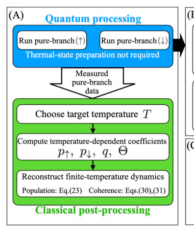
<figcaption class="paper-figure-caption"><b>Fig 1.</b> Fig. 1 (A) Workflow for reconstructing finite-temperature collision dynamics by post-processing pure-branch data. While only the two pure branches are implemented on the quantum computer, the finite-temperature dynamics at a target temperature T is reconstructed by classical post-processing: populations are reconstructed by the convex mixture in Eq. (21), while the coherence dynamics is reconstructed using the contraction factor and phase correction in Eqs. (29) and (30). (B) Quantum circuits for implementing the pure branches. For the hardware convention illustrated here, the default state is taken to be |d⟩= |↑⟩, so that the non-default state | ¯d⟩= |↓⟩is prepared by applying a single X...</figcaption>
</figure>
<figure class="paper-figure-card">
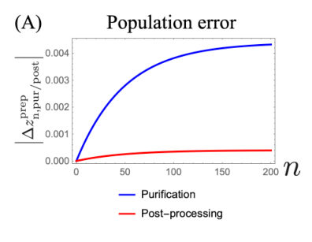
<figcaption class="paper-figure-caption"><b>Fig 2.</b> Fig. 2 Preparation-induced errors as a function of the collision step n for the representative amplitude-damping model. (A) Magnitude of the population preparation error. The purification- based and post-processing errors both saturate with increasing n, while post-processing reconstruction reduces the additional preparation-gate contribution from O(pR + pCX) to O(pX). (B) Relative coherence preparation error. For purification-based implementation, the error grows approximately as O[n(pR + pCX)], whereas post-processing reconstruction using the non-default branch gives O(npX). Using the default branch introduces no additional preparation-gate error and therefore gives Eprep n,post,d = 0....</figcaption>
</figure>
</div>

<p><strong>Summary.</strong> This paper proposes a novel method to simulate open quantum system dynamics at finite temperatures using gate-based quantum computers. By exploiting U(1) symmetry, the authors show that the complex thermal dynamics can be reconstructed classically from measurements performed only with pure ancilla states. This significantly reduces quantum circuit overhead and preparation errors compared to traditional thermal state preparation methods.</p>
<p><strong>Why it may be interesting.</strong> This work provides a concrete, resource-efficient protocol for simulating thermal quantum dynamics on near-term quantum hardware by shifting the complexity from quantum state preparation to classical post-processing.</p>
<details>
<summary>Detailed structure</summary>
<p><strong>Main problem.</strong> The paper addresses the challenge of simulating finite-temperature open-system dynamics on gate-based quantum computers, specifically minimizing the overhead and errors associated with preparing thermal ancilla states.</p>
<p><strong>Main result.</strong> It demonstrates that for U(1)-symmetric interactions, finite-temperature dynamics can be reconstructed classically from measurements performed using only pure ancilla states, thereby bypassing explicit thermal state preparation.</p>
<p><strong>Method.</strong> The methodology involves decomposing the dynamics into population and coherence sectors, deriving reconstruction formulas based on the symmetry constraints, and analyzing the resulting error scaling for different noise models.</p>
<p><strong>Model / system.</strong> The system is an open quantum system modeled using collision maps, where the environment interaction is represented by sequential system-ancilla collisions. The dynamics are analyzed using the Bloch vector representation and exploiting U(1) symmetry.</p>
<p><strong>Key observables.</strong> Population relaxation coefficients ($\gamma$), coherence variables ($w$), and preparation-induced error terms ($\Delta r_{	ext{prep}}^n$, $E_{	ext{prep}}^n$).</p>
<p><strong>Important parameters / regimes.</strong> Temperature ($T$), which is treated classically in the post-processing step; noise parameters associated with the depolarizing and amplitude-damping channels.</p>
<p><strong>Assumptions / limitations.</strong> The reconstruction relies critically on the U(1) symmetry of the system-ancilla interactions; error analysis uses first-order approximations in error parameters.</p>
<p><strong>Figures summary.</strong> Figure 1 illustrates the workflow: generating pure-branch data on the quantum computer followed by classical reconstruction to determine finite-temperature dynamics.</p>
<p><strong>Paper structure.</strong> The paper introduces the collision model and symmetry decomposition, presents the reconstruction formulae for both population and coherence sectors, and concludes with a detailed comparison of preparation-induced error scaling under various noise models.</p>
</details>
<details>
<summary>Abstract</summary>
<p>Simulating open-system dynamics on gate-based quantum computers offers a route to exploring dissipative quantum phenomena through programmable quantum processing. Collision models provide a direct and flexible framework by representing the environment through sequential system--ancilla collisions. At finite temperatures, however, they typically require repeated preparation of thermal ancillas, adding circuit overhead and gate errors. Here, we show that, for a broad class of $U(1)$-symmetric system--ancilla interactions, finite-temperature dynamics can instead be reconstructed from simulations with pure ancillas in orthogonal basis states. The target temperature enters only through classical post-processing of the resulting pure-branch data, allowing the same data to be reused for different temperatures without additional quantum processing. Bypassing explicit thermal-state preparation reduces ancilla-preparation overhead and preparation-induced errors.</p>
</details>
<p><sub><a href="#top">↑ back to top</a></sub></p>

<p><a id="paper-2610.03864"></a></p>
<h3 id="realizing-braided-fusion-2-categories-as-31d-mixed-state-topological-orders"><a href="http://arxiv.org/abs/2610.03864v1">Realizing Braided Fusion 2-Categories as (3+1)D Mixed-State Topological Orders</a></h3>
<p><strong>Authors:</strong> Ryohei Kobayashi, Abhinav Prem, Matthew Yu<br>
<strong>Type:</strong> theory · <strong>Category:</strong> other · <strong>PDF:</strong> <a href="https://arxiv.org/pdf/2610.03864v1">https://arxiv.org/pdf/2610.03864v1</a><br>
<strong>Analysis basis:</strong> full PDF text, analyzed in chunks
<strong>Topic relevance:</strong> <code>correlated / nonlocal dissipation</code> <strong>3/5</strong> · <code>driven-dissipative phase transition</code> <strong>3/5</strong> · <code>methods for driven-dissipative</code> <strong>2/5</strong> · <code>non-equilibrium universality</code> <strong>2/5</strong> · <code>quantum measurements</code> <strong>2/5</strong> · <code>Keldysh / 2PI / non-Gaussian methods</code> <strong>1/5</strong> · <code>analog quantum simulation</code> <strong>1/5</strong></p>
<div class="figure-strip-hint">↔ Scroll figures horizontally</div>
<div class="paper-figures-scroll">
<figure class="paper-figure-card">
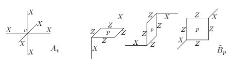
<figcaption class="paper-figure-caption"><b>Fig 1.</b> FIG. 1. Vertex and plaquette terms for the Hamiltonian defin- ing the (3+1)D fermionic Z2 toric code.</figcaption>
</figure>
<figure class="paper-figure-card">
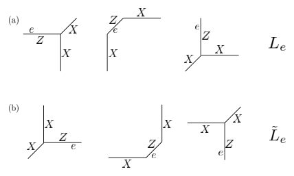
<figcaption class="paper-figure-caption"><b>Fig 2.</b> FIG. 2. Definitions of the operators Le, ˜Le.</figcaption>
</figure>
<figure class="paper-figure-card">
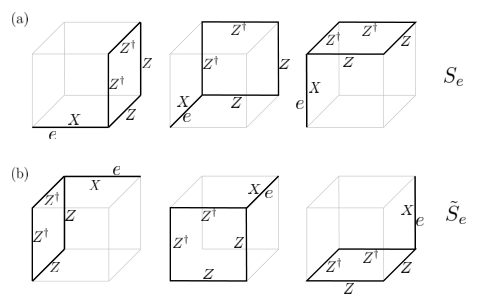
<figcaption class="paper-figure-caption"><b>Fig 3.</b> FIG. 3. Definitions of the operators Se, ˜Se.</figcaption>
</figure>
</div>

<p><strong>Summary.</strong> This theoretical work develops a comprehensive framework to classify mixed-state topological orders in (3+1)D by mapping them onto braided fusion 2-categories. By modeling the effect of decoherence on pure-state systems, the authors demonstrate that these mathematical structures govern the physical realization of exotic topological phases, particularly those exhibiting intrinsic mixed-state characteristics.</p>
<p><strong>Why it may be interesting.</strong> The work provides a rigorous mathematical framework connecting abstract category theory (braided fusion 2-categories) to concrete physical phenomena like decoherence and emergent symmetries in higher-dimensional quantum matter.</p>
<details>
<summary>Detailed structure</summary>
<p><strong>Main problem.</strong> The paper aims to systematically classify and realize mixed-state topological orders (mTOs) in (3+1)D, distinguishing them from pure-state orders by analyzing the role of decoherence and higher-form symmetries.</p>
<p><strong>Main result.</strong> Every braided fusion 2-category can be realized as the topological operator category of a (3+1)D mTO via a general construction involving decoherence and gauging. Intrinsically mixed-state orders (imTOs) are characterized by specific anomalous symmetries.</p>
<p><strong>Method.</strong> The authors employ advanced mathematical tools, relating the data of braided fusion 2-categories to physical symmetries and anomalies, and modeling the process via decoherence channels applied to parent pure-state theories.</p>
<p><strong>Model / system.</strong> The focus is on (3+1)D mixed-state topological orders, exemplified by applying decoherence channels to the fermionic $\mathbb{Z}_2$ toric code Hamiltonian. The mathematical framework utilizes braided fusion 2-categories to encode the topological structure.</p>
<p><strong>Key observables.</strong> Strong higher-form symmetries, their anomalies (e.g., 't Hooft anomaly), and the failure of two-way channel connectivity to a pure state.</p>
<p><strong>Important parameters / regimes.</strong> The dimensionality (3+1)D is crucial, as the authors highlight novel mechanisms absent in (2+1)D, such as gravitational anomalies.</p>
<p><strong>Assumptions / limitations.</strong> The analysis focuses on bosonic theories, and the classification relies on the mathematical structure of braided fusion 2-categories, which is a generalization beyond standard (2+1)D models.</p>
<p><strong>Figures summary.</strong> Figures illustrate the vertex and plaquette terms of the (3+1)D fermionic $\mathbb{Z}_2$ toric code Hamiltonian and define the operators used in the decoherence process.</p>
<p><strong>Paper structure.</strong> The paper builds from defining the mathematical structure of braided fusion 2-categories, generalizing classification tools from (2+1)D to (3+1)D, and finally applying these tools to model the physical process of decoherence to generate mTOs.</p>
</details>
<details>
<summary>Abstract</summary>
<p>We construct large families of mixed-state topological orders in (3+1)D, including intrinsically mixed-state topological orders. We realize these theories by relating the data parameterizing braided fusion 2-categories to the strong higher-form symmetries and their anomalies that characterize mixed-state topological order. We focus here on bosonic theories, which include theories which admit an emergent fermion in the spectrum of line operators. Our general framework is exemplified on the lattice, where we present concrete models and identify how the data of braided fusion 2-categories are physically encoded. We then formalize this data and show that every braided fusion 2-category arises from a general construction (decoherence followed by strong and weak gauging) as the category of topological operators of a (3+1)D mixed state, with intrinsically mixed-state topological orders distinguished by the presence of strong higher-form symmetries whose anomalies cannot be realized in any (3+1)D gapped ground state. Notably, we show that (3+1)D admits a new mechanism with no (2+1)D counterpart: intrinsically mixed-state order whose topological operators braid non-degenerately, but which carries a gravitational anomaly.</p>
</details>
<p><sub><a href="#top">↑ back to top</a></sub></p>

<p><a id="paper-2610.03977"></a></p>
<h3 id="transport-hall-effect-and-collective-dynamics-of-driven-particles-in-active-chiral-media"><a href="http://arxiv.org/abs/2610.03977v1">Transport, Hall Effect, and Collective Dynamics of Driven Particles in Active Chiral Media</a></h3>
<p><strong>Authors:</strong> C. Reichhardt, C. J. O. Reichhardt<br>
<strong>Type:</strong> theory · <strong>Category:</strong> statistical mechanics · <strong>PDF:</strong> <a href="https://arxiv.org/pdf/2610.03977v1">https://arxiv.org/pdf/2610.03977v1</a><br>
<strong>Analysis basis:</strong> full PDF text, analyzed in chunks
<strong>Topic relevance:</strong> <code>driven-dissipative phase transition</code> <strong>3/5</strong> · <code>non-equilibrium universality</code> <strong>3/5</strong> · <code>analog quantum simulation</code> <strong>2/5</strong> · <code>methods for driven-dissipative</code> <strong>2/5</strong> · <code>Frenkel-Kontorova</code> <strong>1/5</strong> · <code>Keldysh / 2PI / non-Gaussian methods</code> <strong>1/5</strong> · <code>correlated / nonlocal dissipation</code> <strong>1/5</strong> · <code>scars &amp; prethermalization</code> <strong>1/5</strong></p>
<div class="figure-strip-hint">↔ Scroll figures horizontally</div>
<div class="paper-figures-scroll">
<figure class="paper-figure-card">
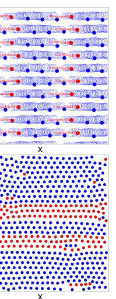
<figcaption class="paper-figure-caption"><b>Fig 1.</b> Figure 1. Particle locations (circles) and trajectories (lines) in a portion of the sample for ρ = 0.29, ac drive amplitude A = 2.0 and frequency ω = 0.02, and temperature T/Tm = 0.2. Red indicates the driven species A particles which experience a dc drive of magnitude FD in the x direction. Blue indicates the active chiral species B particles which are subjected to circular driving. (a) FD = 0.0. (b) The jammed state at FD = 0.5. (c) The disordered flow phase at FD = 2.5. (d) Particle positions only shown for the entire sample in the high drive phase- separated state at FD = 5.5.</figcaption>
</figure>
<figure class="paper-figure-card">
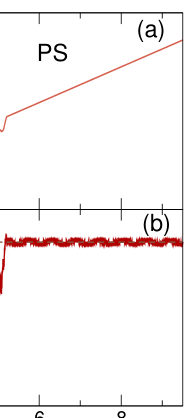
<figcaption class="paper-figure-caption"><b>Fig 2.</b> Figure 2. (a) ⟨V A x ⟩vs FD for the system from Fig. 1 with ρ = 0.29, T/Tm = 0.2, A = 2.0, and ω = 0.02. We highlight the jammed (J) phase, disordered or moving liquid (ML) phase, and phase separated lane state (PS). (b) The corresponding ⟨V A y ⟩vs FD showing that in the disordered flow or ML phase, there is a finite transverse velocity leading to a finite Hall angle.</figcaption>
</figure>
<figure class="paper-figure-card">
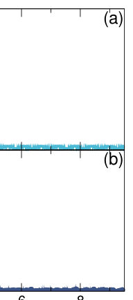
<figcaption class="paper-figure-caption"><b>Fig 3.</b> Figure 3. ⟨V B x ⟩vs FD for the system from Fig. 1 with ρ = 0.29, T/Tm = 0.2, A = 2.0, and ω = 0.02. (b) The corresponding ⟨V B y ⟩vs FD showing that in the disordered flow phase, there is a finite transverse velocity and that the Hall effect is in the opposite direction to that of species A.</figcaption>
</figure>
<figure class="paper-figure-card">
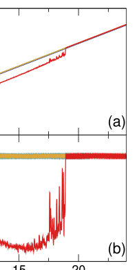
<figcaption class="paper-figure-caption"><b>Fig 4.</b> Figure 4. (a) ⟨V A x ⟩vs FD for a system with ρ = 0.29, T/Tm = 0.2, and ω = 0.02 at ac drive amplitudes of A = 1.0 (dark blue), 4.0 (light blue), 6.0 (orange), and 8.0 (red). (b) The corresponding ⟨V A y ⟩vs FD. The extent of the disordered phase grows with increasing A and the maximum value of |⟨V A y ⟩| also increases.</figcaption>
</figure>
<figure class="paper-figure-card">
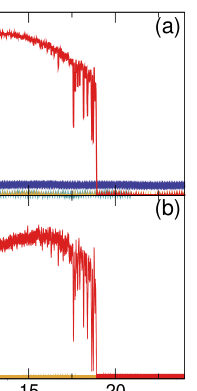
<figcaption class="paper-figure-caption"><b>Fig 5.</b> Figure 5. (a) ⟨V B x ⟩vs FD for the system from Fig. 4 with ρ = 0.29, T/Tm = 0.2, and ω = 0.02 at ac drive amplitudes of A = 1.0 (dark blue), 4.0 (light blue), 6.0 (orange), and 8.0 (red). (b) The corresponding ⟨V B y ⟩vs FD.</figcaption>
</figure>
</div>

<p><strong>Summary.</strong> This work analyzes the complex collective dynamics of particles driven through an active chiral medium. It identifies distinct dynamical phases—such as jammed, disordered, and phase-separated states—each characterized by unique transport properties. The key finding is the emergence and subsequent vanishing of a measurable Hall effect as the system transitions between these non-equilibrium states.</p>
<p><strong>Why it may be interesting.</strong> The study provides a detailed picture of non-equilibrium phase transitions and transport phenomena in active matter, which has parallels with driven quantum many-body systems far from equilibrium.</p>
<details>
<summary>Detailed structure</summary>
<p><strong>Main problem.</strong> The study investigates the non-equilibrium transport, Hall effect, and collective dynamics of driven particles interacting within a medium composed of active chiral particles.</p>
<p><strong>Main result.</strong> The system exhibits distinct dynamical phases (jammed, disordered/plastic, phase-separated) correlated with transport features, showing a finite Hall effect in the disordered regime that vanishes in the lane state.</p>
<p><strong>Method.</strong> The research relies on numerical simulations of overdamped motion governed by Yukawa interactions, analyzing ensemble averages of velocity components.</p>
<p><strong>Model / system.</strong> The model consists of two species of interacting particles: driven particles (A) and active chiral particles (B) undergoing circular motion. The dynamics are governed by a Langevin-like equation incorporating external driving forces.</p>
<p><strong>Key observables.</strong> Longitudinal and transverse velocity components ($\langle V_x 
angle, \langle V_y 
angle$), the Hall effect, and the identification of dynamical phases (Jammed, Disordered/Plastic, Phase-Separated).</p>
<p><strong>Important parameters / regimes.</strong> DC drive strength ($F_D$), thermal fluctuations ($T/T_m$), active orbit size (controlled by AC amplitude $A$), and system density ($
ho$).</p>
<p><strong>Assumptions / limitations.</strong> The interactions are modeled using Yukawa or screened Coulomb potentials, and the motion is assumed to be overdamped.</p>
<p><strong>Figures summary.</strong> Figures illustrate the transitions between phases (J, ML, PS) as a function of $F_D$ and $A$, and show the corresponding non-zero Hall effect in the disordered liquid phase.</p>
<p><strong>Paper structure.</strong> The paper systematically maps out the dynamical phase space by varying external driving forces ($F_D$), AC driving amplitudes ($A$), and system parameters like temperature and density ($
ho$).</p>
</details>
<details>
<summary>Abstract</summary>
<p>We examine the dc driven transport of particles with Yukawa interactions through an assembly of chiral active particles undergoing circular motion. The driven particles exhibit a jammed phase, a nonlinear disordered or plastic regime where there is a finite Hall effect produced by interactions with the active chiral particles, and a high drive linear regime where the driven and nondriven particles phase separate and the Hall effect nearly disappears. The chiral particles experience strong drag and Hall effects from the driven particles, and these effects vary monotonically with changing thermal fluctuations or chiral motion parameters. The different dynamical phases are correlated with features in the longitudinal and transverse transport curves, and we map out the phases as a function of active orbit size, thermal fluctuations, and particle density.</p>
</details>
<p><sub><a href="#top">↑ back to top</a></sub></p>

<p><a id="paper-2610.06764"></a></p>
<h3 id="hypercontractivity-and-entropy-decay-for-infinite-dimensional-quantum-gibbs-samplers"><a href="http://arxiv.org/abs/2610.06764v1">Hypercontractivity and entropy decay for infinite-dimensional quantum Gibbs samplers</a></h3>
<p><strong>Authors:</strong> Simon Becker, Cambyse Rouzé, Robert Salzmann<br>
<strong>Type:</strong> theory · <strong>Category:</strong> statistical mechanics · <strong>PDF:</strong> <a href="https://arxiv.org/pdf/2610.06764v1">https://arxiv.org/pdf/2610.06764v1</a><br>
<strong>Analysis basis:</strong> full PDF text, analyzed in chunks
<strong>Topic relevance:</strong> <code>analog quantum simulation</code> <strong>3/5</strong> · <code>methods for driven-dissipative</code> <strong>3/5</strong> · <code>correlated / nonlocal dissipation</code> <strong>2/5</strong> · <code>driven-dissipative phase transition</code> <strong>2/5</strong> · <code>Keldysh / 2PI / non-Gaussian methods</code> <strong>1/5</strong> · <code>non-equilibrium universality</code> <strong>1/5</strong> · <code>scars &amp; prethermalization</code> <strong>1/5</strong></p>
<div class="figure-strip-hint">↔ Scroll figures horizontally</div>
<div class="paper-figures-scroll">
<figure class="paper-figure-card">
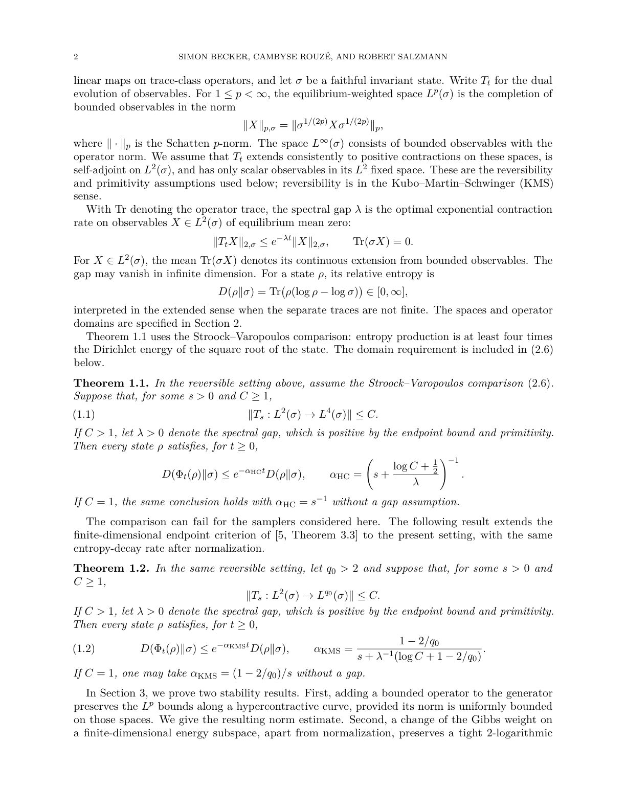
<figcaption class="paper-figure-caption"><b>Fig 1.</b> Low-resolution page preview, page 2</figcaption>
</figure>
<figure class="paper-figure-card">
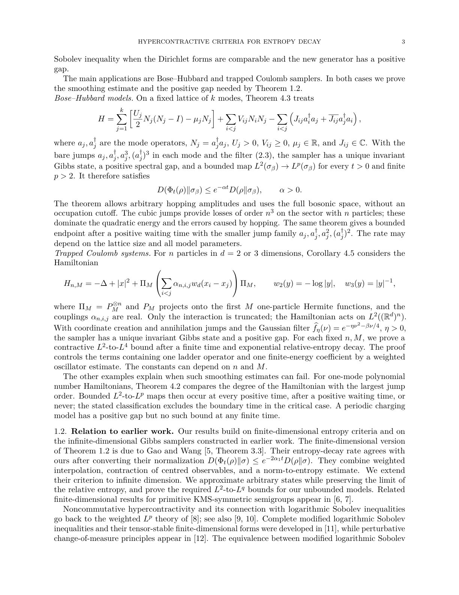
<figcaption class="paper-figure-caption"><b>Fig 2.</b> Low-resolution page preview, page 3</figcaption>
</figure>
<figure class="paper-figure-card">
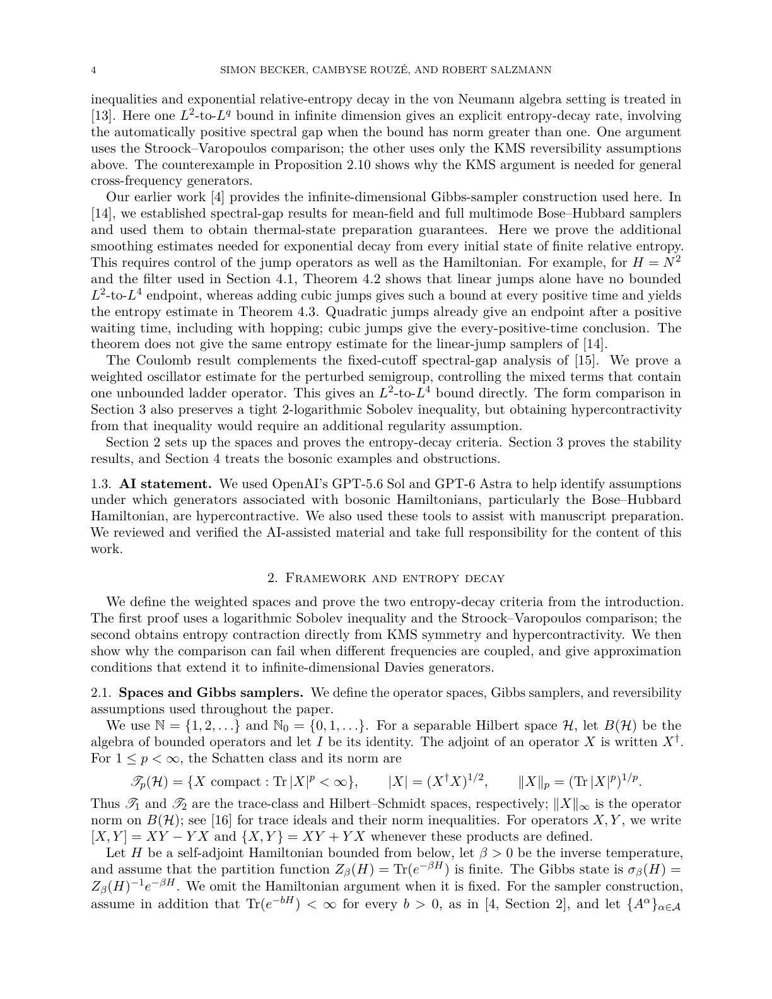
<figcaption class="paper-figure-caption"><b>Fig 3.</b> Low-resolution page preview, page 4</figcaption>
</figure>
<figure class="paper-figure-card">
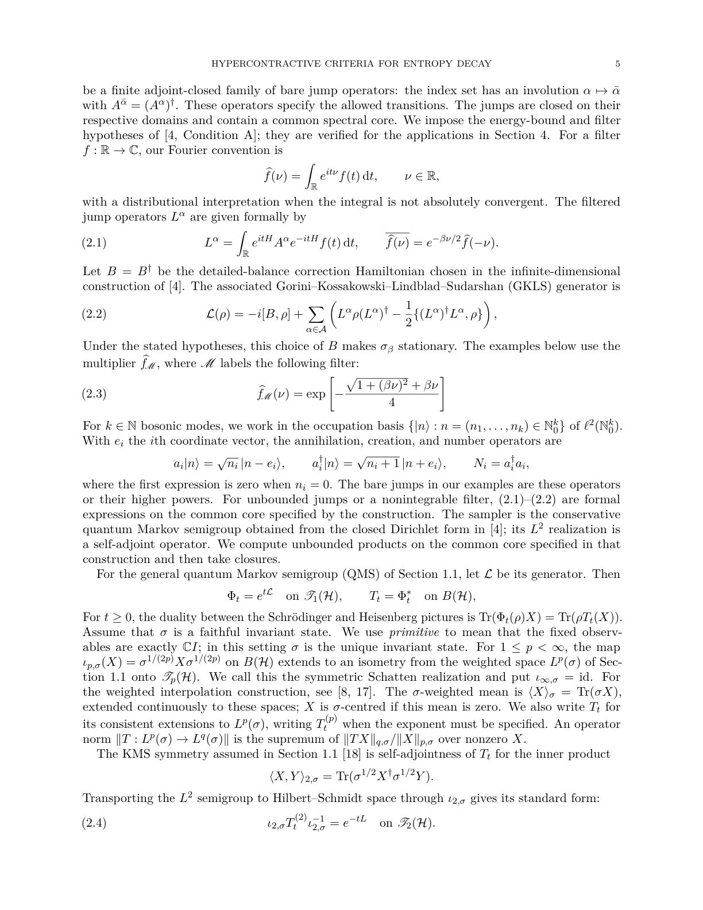
<figcaption class="paper-figure-caption"><b>Fig 4.</b> Low-resolution page preview, page 5</figcaption>
</figure>
<figure class="paper-figure-card">
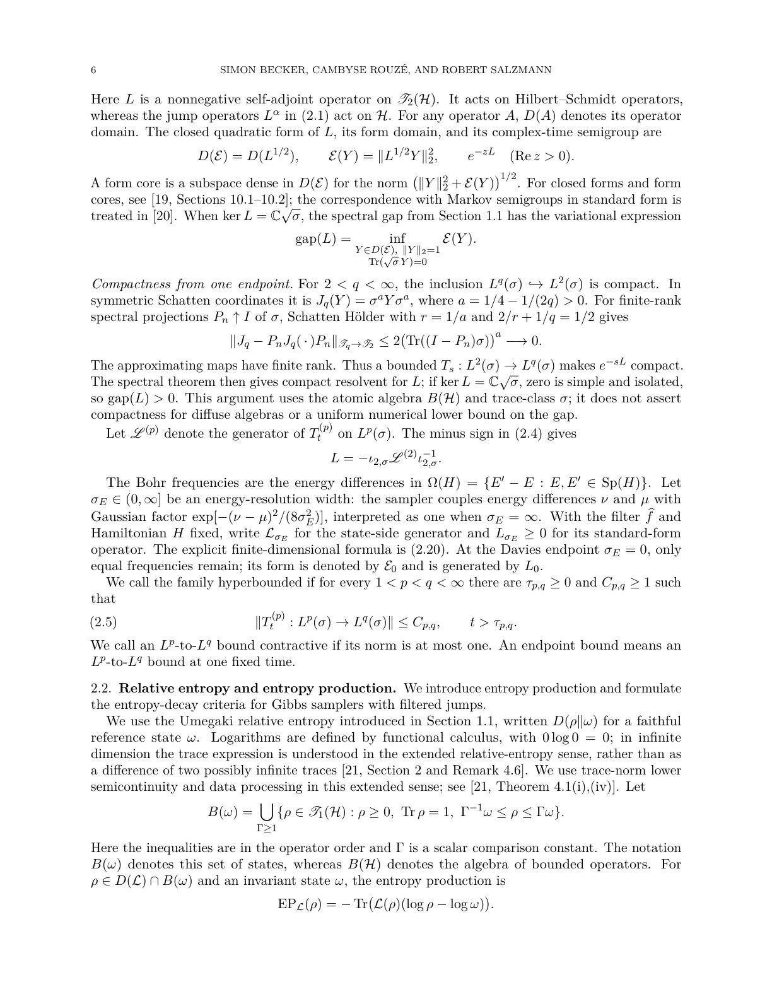
<figcaption class="paper-figure-caption"><b>Fig 5.</b> Low-resolution page preview, page 6</figcaption>
</figure>
</div>

<p><strong>Summary.</strong> This work develops theoretical tools to quantify how fast quantum Gibbs samplers approach thermal equilibrium by analyzing the decay of relative entropy. It successfully proves exponential decay rates for several important physical models, such as Bose-Hubbard and Coulomb systems. Crucially, it also establishes a boundary case, showing that a positive spectral gap alone is insufficient to guarantee the strong convergence properties (hypercontractivity) needed for the fastest decay rates.</p>
<p><strong>Why it may be interesting.</strong> It provides rigorous mathematical tools (hypercontractivity, entropy decay rates) to analyze the convergence speed of quantum thermalization processes in complex, infinite-dimensional many-body systems.</p>
<details>
<summary>Detailed structure</summary>
<p><strong>Main problem.</strong> The paper derives rates of exponential relative-entropy decay for a broad class of infinite-dimensional quantum Gibbs samplers used for thermal state preparation.</p>
<p><strong>Main result.</strong> Exponential entropy decay rates are established for Bose-Hubbard samplers and harmonically confined quantum Coulomb gases, while also providing a counterexample showing positive spectral gap does not guarantee finite-time hypercontractivity.</p>
<p><strong>Method.</strong> The analysis heavily relies on quantum Markov semigroups, utilizing hypercontractivity estimates and modified logarithmic Sobolev inequalities to bound the relative entropy decay.</p>
<p><strong>Model / system.</strong> The study covers general infinite-dimensional quantum Gibbs samplers, including full multimode Bose-Hubbard samplers, harmonically confined quantum Coulomb gases, and a periodic charging model on $\ell^2(\mathbb{Z})$.</p>
<p><strong>Key observables.</strong> Relative entropy $D(
ho\|\sigma)$, spectral gap ($\lambda$), and the $L^2 	o L^p$ map bounds.</p>
<p><strong>Important parameters / regimes.</strong> The decay rates ($\alpha_{HC}, \alpha_{KMS}$) depend on the spectral gap ($\lambda$) and the constants derived from hypercontractivity bounds.</p>
<p><strong>Assumptions / limitations.</strong> The analysis often assumes the existence of a positive spectral gap ($\lambda > 0$) or relies on specific structural properties of the interaction terms (e.g., finite-rank approximations).</p>
<p><strong>Paper structure.</strong> The paper progresses by establishing general theoretical bounds using hypercontractivity, applying these bounds to specific physical models like Bose-Hubbard and Coulomb systems, and concluding with a counterexample demonstrating the limitations of spectral gap conditions.</p>
</details>
<details>
<summary>Abstract</summary>
<p>We derive rates of exponential relative-entropy decay for a broad class of infinite-dimensional quantum Gibbs samplers. A key technical ingredient is a perturbative stability theory for hypercontractive estimates and logarithmic Sobolev inequalities. For suitably chosen dissipative couplings, we obtain exponential entropy decay for full multimode Bose-Hubbard samplers with arbitrary hopping and repulsive density interactions. For harmonically confined quantum Coulomb gases and molecular systems, we prove exponential entropy decay for every fixed finite-rank low-energy truncation of the interaction. Finally, we exhibit a periodic charging model with a positive spectral gap but no finite-time $L^2$-to-$L^p$ bound for any $p>2$.</p>
</details>
<p><sub><a href="#top">↑ back to top</a></sub></p>

<p><a id="paper-2610.05702"></a></p>
<h3 id="momentum-space-path-integral-approach-to-non-hermitian-symmetry-breaking"><a href="http://arxiv.org/abs/2610.05702v1">Momentum-Space Path Integral Approach to Non-Hermitian Symmetry Breaking</a></h3>
<p><strong>Authors:</strong> Zhuo-Ting Cai, Wei Chen<br>
<strong>Type:</strong> theory · <strong>Category:</strong> other · <strong>PDF:</strong> <a href="https://arxiv.org/pdf/2610.05702v1">https://arxiv.org/pdf/2610.05702v1</a><br>
<strong>Analysis basis:</strong> full PDF text, analyzed in chunks
<strong>Topic relevance:</strong> <code>Keldysh / 2PI / non-Gaussian methods</code> <strong>3/5</strong> · <code>driven-dissipative phase transition</code> <strong>3/5</strong> · <code>methods for driven-dissipative</code> <strong>2/5</strong> · <code>non-equilibrium universality</code> <strong>2/5</strong> · <code>analog quantum simulation</code> <strong>1/5</strong> · <code>correlated / nonlocal dissipation</code> <strong>1/5</strong> · <code>quantum measurements</code> <strong>1/5</strong></p>
<div class="figure-strip-hint">↔ Scroll figures horizontally</div>
<div class="paper-figures-scroll">
<figure class="paper-figure-card">
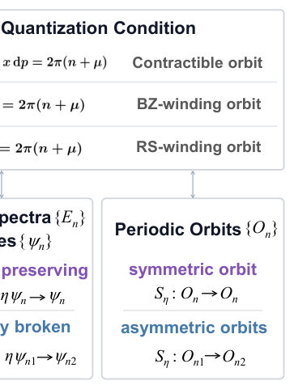
<figcaption class="paper-figure-caption"><b>Fig 1.</b> Figure 1. A more complete quantum-classical correspondence for non-Hermitian symmetry break- ing. Energy spectra and quantum states are related to semiclassical periodic orbits through quanti- zation conditions. Contractible periodic orbits can be quantized equivalently in coordinate or mo- mentum space, whereas Brillouin-zone-winding orbits (BZ-winding orbits) and real-space-winding orbits (RS-winding orbits) require the momentum-space and coordinate-space quantization condi- tions, respectively. The symmetry properties of the orbits further determine the spectral charac- ter: Sη-symmetric orbits correspond to symmetry-preserving states with real eigenenergies, while asymmetric orbits...</figcaption>
</figure>
<figure class="paper-figure-card">
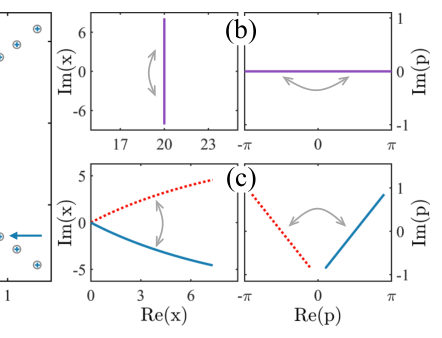
<figcaption class="paper-figure-caption"><b>Fig 2.</b> Figure 2. Boundary-induced real-to-complex spectral transition of Bloch oscillations in a finite non- Hermitian lattice. (a) Comparison between the numerical spectrum (NS), obtained by solving the matrix eigenvalue problem for the finite chain Hamiltonian under open boundary conditions, and the semiclassical energy levels obtained from the quantization conditions QC1–QC3 applied to the periodic orbits shown in (b) and (c). The detailed calculation of the quantization conditions for orbits O1 and O2 is presented in Appendix B. (b) The ST-symmetric Brillouin-zone-winding orbit in complex phase space corresponding to QC3. (c) A representative pair of ST-related orbits reflected from the left...</figcaption>
</figure>
</div>

<p><strong>Summary.</strong> This paper extends the quantum-classical correspondence for non-Hermitian systems by developing a momentum-space path integral formulation. It rigorously compares this dual formulation to the coordinate-space version, showing necessary corrections for noncontractible orbits. The framework is successfully applied to model the spectral transition of Bloch oscillations in finite non-Hermitian lattices.</p>
<p><strong>Why it may be interesting.</strong> This work provides a rigorous, generalized semiclassical tool to analyze spectral transitions (real-to-complex) in non-Hermitian systems, which is highly relevant for understanding open quantum systems and parity-time symmetric physics.</p>
<details>
<summary>Detailed structure</summary>
<p><strong>Main problem.</strong> The paper develops and compares momentum-space and coordinate-space path integral approaches to establish a quantum-classical correspondence for non-Hermitian symmetry breaking.</p>
<p><strong>Main result.</strong> The correspondence is established, showing that the momentum-space formulation requires a boundary term correction for noncontractible orbits, which is naturally incorporated when analyzing Bloch oscillations in finite lattices.</p>
<p><strong>Method.</strong> The authors use path integrals (both coordinate and momentum space) applied to the Green operator, deriving dual Gutzwiller trace formulas and quantization conditions.</p>
<p><strong>Model / system.</strong> The analysis focuses on general non-Hermitian systems, particularly those satisfying $\eta$-pseudo-Hermiticity, and applies the framework to Bloch oscillations in a finite non-Hermitian lattice.</p>
<p><strong>Key observables.</strong> Real or complex nature of individual eigenenergies; quantization conditions derived from path integrals.</p>
<p><strong>Important parameters / regimes.</strong> The winding number (real-space vs. Brillouin-zone); the boundary term correction for noncontractible orbits.</p>
<p><strong>Assumptions / limitations.</strong> The validity of the Saddle-Point Approximation (SPA) and the ability to analytically continue semiclassical phase-space variables to the complex domain.</p>
<p><strong>Figures summary.</strong> Figures illustrate the complex energy spectrum structure for the model Hamiltonian and compare numerical Bloch-oscillation energy levels against analytical quantization condition results.</p>
<p><strong>Paper structure.</strong> The paper builds upon prior coordinate-space work by deriving the momentum-space dual formulation, comparing the resulting quantization conditions for contractible vs. noncontractible orbits, and concluding with a detailed application to Bloch oscillations.</p>
</details>
<details>
<summary>Abstract</summary>
<p>A quantum-classical correspondence for non-Hermitian symmetry breaking has recently been established using coordinate-space path integrals, providing a semiclassical understanding of spectral transitions at the level of individual eigenstates. Here we develop its dual formulation in momentum space by constructing the corresponding trace formula and quantization condition. We show that the real or complex nature of individual eigenvalues is determined by the symmetry properties of the associated semiclassical orbits, as in the coordinate-space path-integral approach. Moreover, we demonstrate that the topology of semiclassical orbits determines the natural formulation of the quantization condition: the coordinate- and momentum-space formulations are equivalent for contractible periodic orbits in phase space, whereas for noncontractible orbits, the quantization condition along the winding direction remains valid, but its dual form must be corrected by a boundary term. In particular, real-space-winding and Brillouin-zone-winding orbits naturally select coordinate- and momentum-space quantization, respectively. As a nontrivial application, we investigate the boundary-induced spectral transition of Bloch oscillations in a finite non-Hermitian lattice, where Bloch-oscillation orbits winding across the Brillouin zone preserve the relevant symmetry and yield real energy levels, whereas boundary-reflected orbits form symmetry-related pairs and give rise to complex-conjugate eigenvalues. Our work completes the quantum-classical correspondence framework for non-Hermitian symmetry breaking, extending its applicability to a broader class of non-Hermitian problems.</p>
</details>
<p><sub><a href="#top">↑ back to top</a></sub></p>

<p><a id="paper-2610.05093"></a></p>
<h3 id="the-magic-cost-of-fermionic-randomness"><a href="http://arxiv.org/abs/2610.05093v1">The magic cost of fermionic randomness</a></h3>
<p><strong>Authors:</strong> Chenfeng Cao, Yifan Tang, Jens Eisert<br>
<strong>Type:</strong> theory · <strong>Category:</strong> other · <strong>PDF:</strong> <a href="https://arxiv.org/pdf/2610.05093v1">https://arxiv.org/pdf/2610.05093v1</a><br>
<strong>Analysis basis:</strong> full PDF text, analyzed in chunks
<strong>Topic relevance:</strong> <code>Full counting statistics</code> <strong>3/5</strong> · <code>analog quantum simulation</code> <strong>3/5</strong> · <code>Keldysh / 2PI / non-Gaussian methods</code> <strong>2/5</strong> · <code>correlated / nonlocal dissipation</code> <strong>1/5</strong> · <code>driven-dissipative phase transition</code> <strong>1/5</strong> · <code>methods for driven-dissipative</code> <strong>1/5</strong> · <code>non-equilibrium universality</code> <strong>1/5</strong> · <code>quantum measurements</code> <strong>1/5</strong></p>
<div class="figure-strip-hint">↔ Scroll figures horizontally</div>
<div class="paper-figures-scroll">
<figure class="paper-figure-card">
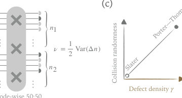
<figcaption class="paper-figure-caption"><b>Fig 1.</b> FIG. 1. Fermion sampling and its two-copy witness. (a) A Haar- random mode unitary u ∈U(4N) induces the passive-FLO circuit V = V2N u, which acts on N four-mode blocks |ψλi⟩before an oc- cupation measurement with outcome x. (b) Two identical copies are mixed by a mode-wise 50:50 beam splitter, followed by occupation measurements. For every pure fixed-number input, Var(∆n) = 2ν [Eq. (4)]. The full number-difference histogram additionally deter- mines the replica-singlet weight A2 and hence the exact collision moment. (c) The asymptotic collision randomness 2/CN along the uniform four-mode family, plotted against defect density γ = ν/N. The open circle is the Slater endpoint, where CN = Θ(N)....</figcaption>
</figure>
<figure class="paper-figure-card">
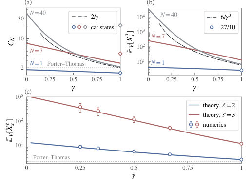
<figcaption class="paper-figure-caption"><b>Fig 2.</b> FIG. 2. Collision and third moments for uniform profiles. (a) Ex- act collision moments and the asymptote 2/γ; diamonds show com- plementary two-Slater cats with ν = N. (b) Third moments and the asymptote 6/γ3. The open circle marks the exact N = 1, γ = 1 value 27/10 derived in the SM. (c) Theory at N = 12 compared with direct Haar sampling; the dotted line marks the Porter–Thomas value 2 for ℓ= 2; numerical protocols and uncertainty estimates are given in the SM.</figcaption>
</figure>
<figure class="paper-figure-card">
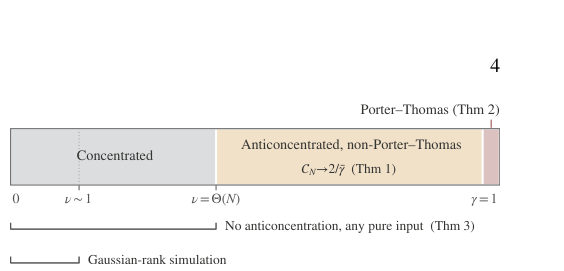
<figcaption class="paper-figure-caption"><b>Fig 3.</b> FIG. 3. Sampling regimes versus defect density γ = ν/N. Subextensive defect universally excludes anticoncentration, while bounded-block products anticoncentrate at extensive defect with CN →2/¯γ for γ →¯γ &gt; 0. The four-mode family reaches the Porter–Thomas hierarchy only as γ →1. For ν = O(1), explicit truncated-rank descriptions also permit fixed-accuracy Gaussian- rank simulation (SM). The fermion-sampling input of Ref. [8] corre- sponds to γ = 1.</figcaption>
</figure>
<figure class="paper-figure-card">
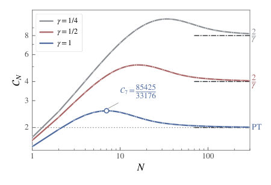
<figcaption class="paper-figure-caption"><b>Fig 4.</b> FIG. 4. Uniform-profile collision moments. Exact CN for the uni- form family 4λ(1 −λ) = γ; dash-dotted: 2/γ; the γ = 1 maximum occurs at N = 7.</figcaption>
</figure>
</div>

<p><strong>Summary.</strong> This work quantifies the 'magic cost' of fermionic randomness, determining that achieving quantum chaotic sampling statistics requires the input state to possess a defect ($
u$) that scales linearly with system size. The authors establish a direct, measurable link between this defect and the necessary preparation resources, providing a quantitative witness for non-Gaussianity in fermionic quantum computation.</p>
<p><strong>Why it may be interesting.</strong> It provides a rigorous, quantitative measure ($
u$) linking fundamental quantum resource limitations (non-Gaussianity) to observable statistical properties (collision moments) in fermionic many-body systems, which is highly relevant for understanding quantum simulation feasibility.</p>
<details>
<summary>Detailed structure</summary>
<p><strong>Main problem.</strong> The paper investigates the minimum non-Gaussian resource required in the input state of fermionic systems to achieve quantum sampling statistics associated with quantum chaos, especially when the evolution dynamics are passive and Gaussian.</p>
<p><strong>Main result.</strong> Achieving anticoncentration or approaching Porter-Thomas statistics requires the one-body defect ($
u$) to scale linearly with system size ($
u = \Omega(N)$), establishing an extensive 'magic cost' for fermionic randomness.</p>
<p><strong>Method.</strong> The analysis uses theoretical bounds derived from analyzing collision moments, two-copy interference protocols, and comparing asymptotic behavior to known random matrix statistics.</p>
<p><strong>Model / system.</strong> The system models fermionic particles evolving via passive fermionic linear optics (FLO) on $2N$ fermions, analyzed specifically at half-filling. The resource is quantified by the one-body defect ($
u$).</p>
<p><strong>Key observables.</strong> One-body defect ($
u$), defect density ($\gamma$), normalized collision moment ($C_N$), and the two-copy variance ($ ext{Var}(\Delta n)$).</p>
<p><strong>Important parameters / regimes.</strong> System size ($N$), defect density ($\gamma$), and the ratio of the collision moment to the Porter-Thomas value (2).</p>
<p><strong>Assumptions / limitations.</strong> The analysis assumes the evolution is passive and that the resource is entirely contained within the input state. Hardness results rely on conjectures regarding the polynomial hierarchy.</p>
<p><strong>Figures summary.</strong> Figures illustrate the relationship between the collision moment ($C_N$) and defect density ($\gamma$), showing the distinct asymptotic limits for Slater inputs versus the Porter-Thomas regime, and visualizing the two-copy variance measurement.</p>
<p><strong>Paper structure.</strong> The paper progresses by first establishing the obstruction caused by Gaussian evolution, then deriving the necessary scaling of the defect ($
u$) to overcome it, and finally providing a quantitative link between this defect and the preparation cost via two-copy measurements.</p>
</details>
<details>
<summary>Abstract</summary>
<p>Sampling-based quantum advantage raises a basic resource question: how much non-Gaussianity is needed to reproduce the random-matrix statistics often associated with quantum chaos? Passive fermionic linear optics preserves Gaussian structure, and even Haar-random mode mixing fails to anticoncentrate for Slater inputs. We show that overcoming this obstruction requires an extensive input resource. For any pure half-filled input state, the one-body defect $ν$, defined as the summed occupation variance of the natural orbitals, must scale linearly with system size. For products of bounded-size blocks on $4N$ modes, this condition is also sufficient, with normalized collision moment asymptotic to $2N/ν$, compared with the Porter-Thomas value 2. For four-mode products, the full Porter-Thomas moment hierarchy is recovered precisely when the defect density tends to its maximum. Assuming average-case hardness, approximate classical sampling remains hard near maximal density, with an error tolerance that increases with the density. Two-copy number fluctuations measure $ν$ directly, and the same quantity lower-bounds the combined cost of non-Gaussian resource modes and parity-preserving local gates in deterministic exact preparation. Fermionic randomness therefore carries an extensive magic cost, with a quantitative link between sampling statistics, preparation resources, and an experimentally accessible witness.</p>
</details>
<p><sub><a href="#top">↑ back to top</a></sub></p>

<p><a id="paper-2610.05079"></a></p>
<h3 id="phase-controlled-recoverable-entanglement-in-accelerated-detector-registers"><a href="http://arxiv.org/abs/2610.05079v1">Phase-controlled recoverable entanglement in accelerated detector registers</a></h3>
<p><strong>Authors:</strong> Zhiming Huang<br>
<strong>Type:</strong> theory · <strong>Category:</strong> quantum information and computing · <strong>PDF:</strong> <a href="https://arxiv.org/pdf/2610.05079v1">https://arxiv.org/pdf/2610.05079v1</a><br>
<strong>Analysis basis:</strong> full PDF text, analyzed in chunks
<strong>Topic relevance:</strong> <code>correlated / nonlocal dissipation</code> <strong>3/5</strong> · <code>methods for driven-dissipative</code> <strong>3/5</strong> · <code>driven-dissipative phase transition</code> <strong>2/5</strong> · <code>quantum measurements</code> <strong>2/5</strong> · <code>Keldysh / 2PI / non-Gaussian methods</code> <strong>1/5</strong> · <code>non-equilibrium universality</code> <strong>1/5</strong></p>
<div class="figure-strip-hint">↔ Scroll figures horizontally</div>
<div class="paper-figures-scroll">
<figure class="paper-figure-card">
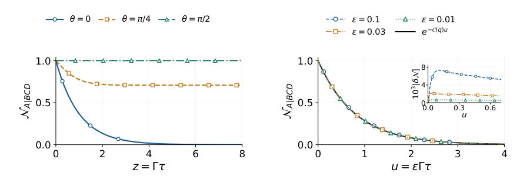
<figcaption class="paper-figure-caption"><b>Fig 1.</b> Figure 1: Phase selection and the slow limit, with q = 0.4. (a) Exact negativity at f = 1 for three locally equivalent initial states; line patterns and markers distinguish the phases. (b) Marked curves are the exact results at θ = π/2 and ϵ = 0.1, 0.03, 0.01, plotted against u = ϵΓτ. The black solid line is e−C(q)u. The inset shows 103|δN|, with δN = Nπ/2−e−C(q)u</figcaption>
</figure>
<figure class="paper-figure-card">

<figcaption class="paper-figure-caption"><b>Fig 2.</b> Figure 1 separates the effect of preparation phase from this weak leakage. Panel (a) fixes f = 1. Panel (b) plots the finite-ϵ results against u = ϵΓτ. Curves at different ϵ therefore correspond to different physical time scales, and their overlap tests the common slow law. The inset resolves their differences from that law. The choice q = 0.4 corresponds to a/ω = −2π/ ln 0.4 ≃6.86 and makes the thermal-population contribution to C(q) visible. To express this lifetime in terms of detector geometry, expand the spatial factors in (3.8) and (3.9). Appendix A gives the intermediate Taylor terms. At small transverse separation, the result is</figcaption>
</figure>
<figure class="paper-figure-card">
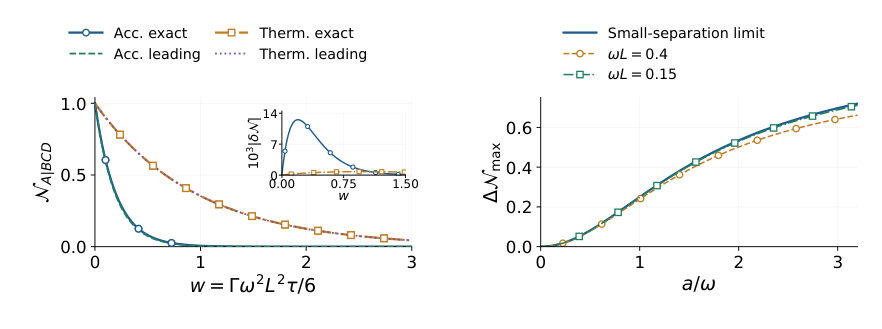
<figcaption class="paper-figure-caption"><b>Fig 3.</b> Figure 2: Entanglement contrast at matched local temperature and relaxation rate. (a) Protected-phase results at a/ω = 2, ωL = 0.2, plotted against w = Γω2L2τ/6. The solid curve with circles and the dash-dotted curve with squares are the exact accelerated and thermal results. Dashed and dotted curves are their respective leading limits (5.14). The inset gives 103|δN|, where δN = N exact −N leading, with the colors of the exact curves. (b) The unmarked solid curve is (5.16). Marked curves maximize the exact negativity difference at the indicated finite separations; their line patterns and symbols match the legend.</figcaption>
</figure>
</div>

<p><strong>Summary.</strong> This paper investigates how entanglement stored in a multi-qubit register can be protected and recovered when the qubits interact with a noisy quantum field. By controlling the initial preparation phase, the authors show that the entanglement can be robustly recovered into a usable quantum resource like a Bell pair. The theoretical framework uses advanced tools from open quantum systems to analyze decay rates under various physical separation limits.</p>
<p><strong>Why it may be interesting.</strong> This work provides a detailed theoretical framework for quantifying how quantum correlations (entanglement) can be protected and retrieved from noisy environments, which is central to quantum communication and quantum memory research.</p>
<details>
<summary>Detailed structure</summary>
<p><strong>Main problem.</strong> The study focuses on quantifying and understanding the persistence and recovery of entanglement in a multi-qubit register coupled to an external quantum field.</p>
<p><strong>Main result.</strong> The authors determine an optimal phase control that allows a fixed decoder to recover a Bell pair, and derive analytic formulas for the decay rate of this recoverable entanglement under various physical limits.</p>
<p><strong>Method.</strong> The analysis employs quantum channel theory, sector decomposition (singlet/triplet), and time evolution governed by Lindblad master equations, supplemented by weak-coupling and perturbation theory.</p>
<p><strong>Model / system.</strong> The system is a four-qubit cluster-state register whose two detector qubits interact with a massless scalar field. The dynamics are modeled using GKSL generators and analyzed in the context of quantum dissipative systems.</p>
<p><strong>Key observables.</strong> Negativity ($N(
ho)$), initial reference-register entanglement, and the fidelity of recovered quantum resources (e.g., Bell pairs, teleportation resources).</p>
<p><strong>Important parameters / regimes.</strong> The initial phase ($    heta$), detector separation ($L$), coupling strength ($\Gamma$), and time ($z$ or $ au$).</p>
<p><strong>Assumptions / limitations.</strong> The analysis relies heavily on the secular approximation, weak-coupling limits, and specific commutation relations between the noise channel and the system's symmetry sectors.</p>
<p><strong>Figures summary.</strong> Figure 2 compares the entanglement contrast ($\Delta\Phi_{	ext{max}}$) for accelerated versus thermal detector results across different parameter regimes.</p>
<p><strong>Paper structure.</strong> The paper progresses from establishing the phase-controlled recovery of entanglement in the general case, to deriving the time evolution of the negativity for accelerated detectors, and finally analyzing the limits imposed by finite separation and microscopic details using ordered limits.</p>
</details>
<details>
<summary>Abstract</summary>
<p>We study recoverable entanglement in a four-qubit cluster-state register whose two detector qubits couple to a scalar field. A local preparation phase leaves the initial reference--register entanglement and detector marginal unchanged, but controls protection under collective noise. At the optimal phase, a fixed decoder recovers a Bell pair after any channel preserving the singlet and triplet sectors. For uniformly accelerated detectors at finite separation, an exact trace-norm formula shows that the same phase is optimal at every time within the secular weak-coupling dynamics. Small separation produces a slow decay, whose rate and phase-dependent amplitude we derive. Matching the local response to an inertial thermal bath gives an analytic optimum time for the entanglement contrast. A detector measurement and conditional phase correction recover a two-qubit teleportation resource. Spatial smearing and an ordered weak-coupling then small-separation limit specify the microscopic scope of the lifetime prediction.</p>
</details>
<p><sub><a href="#top">↑ back to top</a></sub></p>

<p><a id="paper-2610.06701"></a></p>
<h3 id="a-solvable-model-of-adaptive-learning-rate-rescaling-acceleration-stability-scaling"><a href="http://arxiv.org/abs/2610.06701v1">A Solvable Model of Adaptive Learning Rate Rescaling: Acceleration, Stability &amp; Scaling</a></h3>
<p><strong>Authors:</strong> Itay Lavie, Clarissa Lauditi, Cengiz Pehlevan<br>
<strong>Type:</strong> theory · <strong>Category:</strong> disordered systems and neural networks · <strong>PDF:</strong> <a href="https://arxiv.org/pdf/2610.06701v1">https://arxiv.org/pdf/2610.06701v1</a><br>
<strong>Analysis basis:</strong> full PDF text, analyzed in chunks
<strong>Topic relevance:</strong> <code>Keldysh / 2PI / non-Gaussian methods</code> <strong>3/5</strong> · <code>non-equilibrium universality</code> <strong>3/5</strong> · <code>methods for driven-dissipative</code> <strong>2/5</strong> · <code>analog quantum simulation</code> <strong>1/5</strong> · <code>driven-dissipative phase transition</code> <strong>1/5</strong></p>
<div class="figure-strip-hint">↔ Scroll figures horizontally</div>
<div class="paper-figures-scroll">
<figure class="paper-figure-card">
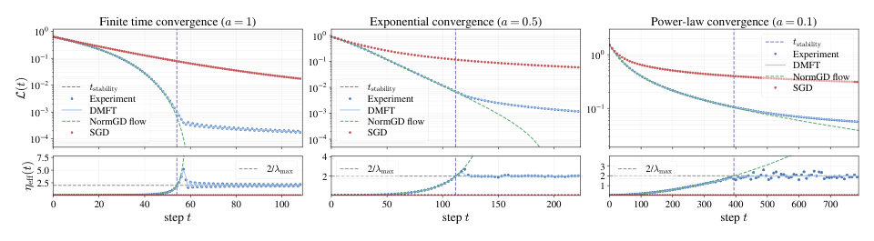
<figcaption class="paper-figure-caption"><b>Fig 1.</b> FIG. 1. Three transient convergence regimes. Loss (top) and effective learning rate (bottom) at large α, ν. Before tstab, simulations and DMFT follow the continuous-time prediction: formal finite-time convergence for a &gt; 1/2 (left), exponential for a = 1/2 (center), and accelerated power-law convergence for a &lt; 1/2 (right). SGD uses ηSGD = ηeff(0) to match the initial update norm. At tstab, ηeff reaches 2/λmax and the discrete dynamics depart from the flow prediction.</figcaption>
</figure>
<figure class="paper-figure-card">
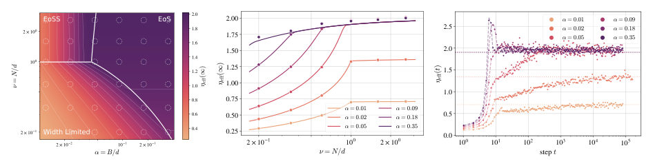
<figcaption class="paper-figure-caption"><b>Fig 2.</b> FIG. 2. Three late-time regimes: width limited, EoSS, and EoS. Left: DMFT phase diagram in the (α, ν) plane. Color denotes η∞ eff, solid curves phase boundaries, and perforated circles denote norm-SGD simulations; colors that blend well indicate a good match to the theory. Increasing ν removes the width bottleneck, while increasing α suppresses minibatch noise and drives the EoSS–EoS transition; within EoS, the stability threshold depends weakly on ν. Center: η∞ eff versus ν, showing width-limited behavior and the phase boundary between batch-dependent EoSS branches to the common EoS branch as α increases. Right: ηt eff at ν = 1. Dots are simulations, dashed curves are DMFT, and horizontal...</figcaption>
</figure>
<figure class="paper-figure-card">
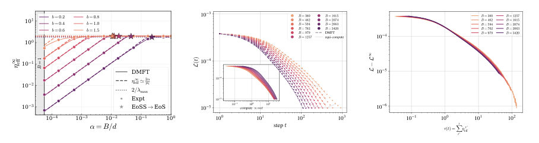
<figcaption class="paper-figure-caption"><b>Fig 3.</b> FIG. 3. Spectral control of batch-size scaling and saturation. Left: Stationary effective learning rate η∞ eff versus batch ratio α = B/d, at fixed width ratio ν = N/d. Solid curves show DMFT predictions and circles show simulations. Dashed lines indicate the small-batch linear approximation 2α/µ1, with µ1 = ⟨λk⟩k, and dotted lines indicate the curvature ceiling 2/λmax(ν). Stars mark the EoSS–EoS transition; the vertical line marks B = 1. Flatter spectra support a more extended increase in effective learning rate before saturation. Center: Training different batch sizes α on a = 0.45, b = 0.2 data. With equal compute, a larger batch size achieves the same level of performance faster (fewer...</figcaption>
</figure>
<figure class="paper-figure-card">
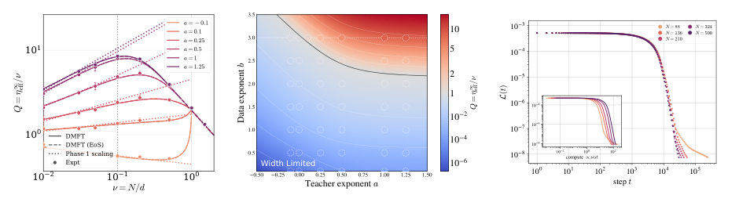
<figcaption class="paper-figure-caption"><b>Fig 4.</b> FIG. 4. Spectral dependence of width efficiency. Stationary effective time per unit compute, quantified by Qν = η∞ eff/ν. Left: Width dependence of Qν at fixed b = 3, for different teacher exponents a. Solid curves show DMFT predictions before EoS, dashed curves indicate the EoS branch, and markers show simulations. Increasing Qν corresponds to superlinear growth of the effective learning rate with width; a maximum identifies an optimal width according to this stationary efficiency measure. Center: Dependence of Qν on the teacher and data exponents at fixed ν = 0.1. The background shows DMFT predictions, while circles show simulation estimates using the same logarithmic color scale. Dotted...</figcaption>
</figure>
<figure class="paper-figure-card">
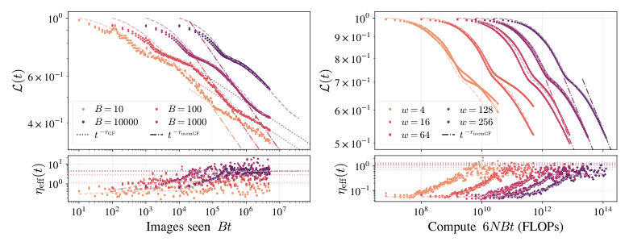
<figcaption class="paper-figure-caption"><b>Fig 5.</b> FIG. 5. Theory predicts training curves exponents for training with linearized networks. Loss (top) and effective learning rate (bottom). Before ηeff hits its ceiling η∞ eff, the loss decreases with an accelerated power law, after the ceiling is reached the power law degrades to the standard SGD power law. Throughout the narrowest width and smallest batch size are optimal, as predicted in the previous section for these a, b. (left) Loss as a function of images seen, Bt, for different batch sizes and fixed w = 128, η = 0.1 (proportional to compute). (right) Loss as a function of compute, calculated as 6NBt, for different widths and fixed B = 1, 000, η = 0.01</figcaption>
</figure>
</div>

<p><strong>Summary.</strong> This theoretical work analyzes the dynamics of normalized SGD, showing that while normalization initially accelerates learning, this benefit degrades at finite step sizes. By deriving a DMFT, the authors map out distinct stability regimes (EoSS and EoS) that govern how model width and batch size must scale relative to each other to achieve efficient training time.</p>
<p><strong>Why it may be interesting.</strong> The mathematical framework developed—using DMFT and analyzing stability edges—is highly relevant to understanding non-equilibrium dynamics in complex, high-dimensional systems, mirroring techniques used in quantum many-body physics.</p>
<details>
<summary>Detailed structure</summary>
<p><strong>Main problem.</strong> The paper investigates how modern adaptive optimizers, which decouple update magnitude from raw gradient norm, affect the learning curve and resource scaling of deep learning models.</p>
<p><strong>Main result.</strong> Normalization initially accelerates SGD, but this acceleration breaks down at finite step sizes, leading to distinct late-time regimes (EoSS and EoS) that dictate resource trade-offs for training.</p>
<p><strong>Method.</strong> The authors derive a Dynamical Mean-Field Theory (DMFT) to model the joint dependence of the loss on training time, model width, and batch size in the proportional limit.</p>
<p><strong>Model / system.</strong> The study analyzes Normalized Stochastic Gradient Descent (SGD) applied to a random-feature model characterized by power-law teacher and data covariance.</p>
<p><strong>Key observables.</strong> Effective learning rate ($\eta_{	ext{eff}}$), convergence exponents ($r_{	ext{SGD}}$), and width/batch scaling efficiency ($Q_
u, Q_\alpha$).</p>
<p><strong>Important parameters / regimes.</strong> Model width ($
u=N/d$), batch size ($\alpha=B/d$), and the power-law exponents of the teacher and data covariance.</p>
<p><strong>Assumptions / limitations.</strong> The analysis relies on the proportional limit ($d, N, B 	o \infty$ at fixed ratios) and uses DMFT approximations to simplify high-dimensional dynamics.</p>
<p><strong>Figures summary.</strong> Figures illustrate transient convergence regimes, the existence of three late-time phases (width-limited, EoSS, EoS), and the scaling of width efficiency ($Q_
u$) across different parameter regimes.</p>
<p><strong>Paper structure.</strong> The paper progresses from establishing the core problem with adaptive optimizers to deriving the DMFT, characterizing the convergence rates, identifying the stability regimes (EoSS/EoS), and finally quantifying the resource scaling trade-offs across these phases.</p>
</details>
<details>
<summary>Abstract</summary>
<p>A recurring design principle in modern optimizers is to decouple update magnitude from the raw gradient norm, yet its consequences for learning-curve and resource scaling remain unclear. We isolate this mechanism by studying normalized SGD in a random-feature model with power-law teacher and data covariance. Fixed-norm updates induce an effective learning rate that grows as gradients shrink. We derive a dynamical mean-field theory (DMFT) describing the joint dependence of the loss on training time, model width and batch size. Normalization initially accelerates SGD, mapping the power-law exponent $r_{\rm SGD}<1$ to $2r_{\rm SGD}/(1-r_{\rm SGD})$, with exponential convergence at $r_{\rm SGD}=1$ and formal finite-time convergence for $r_{\rm SGD}>1$. At finite step size, however, the same feedback ultimately breaks the acceleration and leads to marginal stability. The late-time theory yields width-limited, edge-of-stochastic-stability (EoSS), and deterministic edge-of-stability (EoS) regimes. These phases determine when larger batches or wider models reduce serial training time at comparable compute. We quantify in which of these phases increased batch size or width can compensate the excess compute use per step by fewer optimization steps to target loss. Linearized ResNet experiments on CIFAR-5M support the predicted acceleration, breakdown, and resource-scaling trends. Together, these results connect normalization-induced acceleration, EoS effects, and width--batch allocation within a solvable theory.</p>
</details>
<p><sub><a href="#top">↑ back to top</a></sub></p>

<p><a id="paper-2610.04581"></a></p>
<h3 id="decoy-state-optical-quantum-information-processing-with-coherent-states"><a href="http://arxiv.org/abs/2610.04581v1">Decoy-state optical quantum information processing with coherent states</a></h3>
<p><strong>Authors:</strong> Wenyuan Wang, H. F. Chau<br>
<strong>Type:</strong> theory · <strong>Category:</strong> quantum information and computing · <strong>PDF:</strong> <a href="https://arxiv.org/pdf/2610.04581v1">https://arxiv.org/pdf/2610.04581v1</a><br>
<strong>Analysis basis:</strong> full PDF text, analyzed in chunks
<strong>Topic relevance:</strong> <code>Full counting statistics</code> <strong>3/5</strong> · <code>quantum measurements</code> <strong>3/5</strong> · <code>methods for driven-dissipative</code> <strong>2/5</strong> · <code>analog quantum simulation</code> <strong>1/5</strong> · <code>interference shaping light</code> <strong>1/5</strong></p>
<div class="figure-strip-hint">↔ Scroll figures horizontally</div>
<div class="paper-figures-scroll">
<figure class="paper-figure-card">
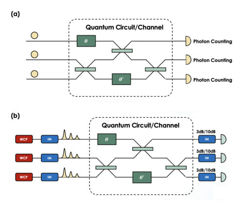
<figcaption class="paper-figure-caption"><b>Fig 1.</b> FIG. 1. (a) A photonic information processing setup. The optical circuit usually needs Fock states as input and photon- counting detectors on the output to achieve desired function, such as optical quantum computing or quantum metrology. (b) A full input/output decoy-state setup where input Fock states are replaced with weak coherent pulses (WCPs) with varying intensities and the output detectors are replaced with threshold detectors with varying attenuations before them. Combined with post-processing (decoy state analysis), we can estimate the statistics coming from the events where desired photon numbers enter and leave the circuit in question.</figcaption>
</figure>
<figure class="paper-figure-card">
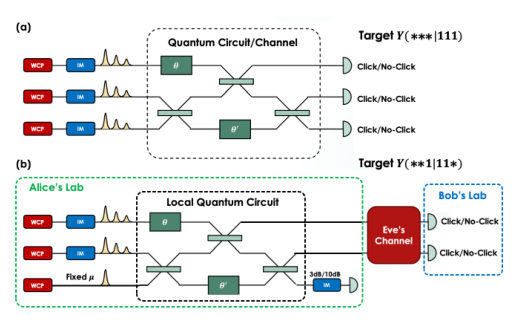
<figcaption class="paper-figure-caption"><b>Fig 2.</b> FIG. 2. (a) A setup where only input ports carry de- coy states while output ports have fixed detector efficien- cies and only report click/no-click. In this case we are estimating the Fock state statistics for input ports only, Yη1,η2,η3,p1,p2,p3(∗, ∗, ∗|n1, n2, n3). (b) A setup with mix- tures of ports with decoy states and fixed ports. For in- stance, here Alice can iterate over intensity settings for two ports and keep one port at constant (or vacuum) intensity. She can also choose to implement detector decoy on some output ports, such as for her local detectors for heralding, while keeping the other ports free-running, such as for ports going through an open quantum channel into Bob’s...</figcaption>
</figure>
<figure class="paper-figure-card">
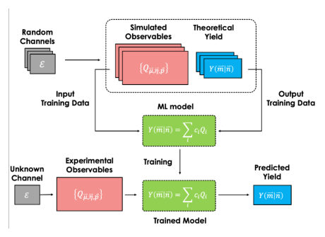
<figcaption class="paper-figure-caption"><b>Fig 3.</b> FIG. 3. The data flow for the training. We can generate ran- dom channels (arbitrary or unitary, depending on target user scenario) and calculate the simulated observables and theoret- ical yield for each one, which can then be used as labeled data to train a machine learning model (which can be as simple as a linear regression model) to learn the mapping. Importantly, this mapping is channel-independent and is determined only by the decoy settings chosen prior to an experiment. Once the model is trained, it can be used to read in new observ- ables from coherent light sources obtained from an unknown channel and predict the corresponding Fock state yield with high accuracy.</figcaption>
</figure>
<figure class="paper-figure-card">
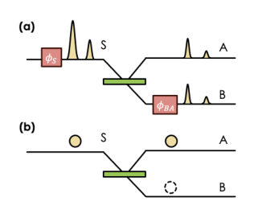
<figcaption class="paper-figure-caption"><b>Fig 4.</b> FIG. 4. (a) Synchronized intensity choices at ports A and B can be viewed equivalently as intensity choices at a com- mon virtual source S (phase-randomized by a global phase ϕS) and a randomized relative phase ϕBA between A and B, which does not affect photon numbers. Therefore, as shown in (b), performing decoy analysis with intensity settings of fixed ratios across ports can only tell the Fock state statistics of n photons at port S, in other words a total of nA + nB = n photons in ports A and B, but not the specific Fock state statistics for nA, nB.</figcaption>
</figure>
<figure class="paper-figure-card">
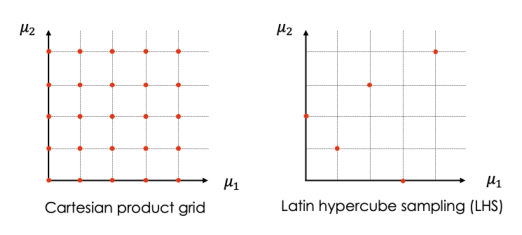
<figcaption class="paper-figure-caption"><b>Fig 5.</b> FIG. 5. Full Cartesian product grid (left) versus Latin Hyper- cube Sampling (right). LHS is akin to the ”8 rook problem” in chess (place every rook piece such that each row and each col- umn contains exactly one rook), which creates a structured pseudo-random sampling across all dimensions with drasti- cally smaller sample size.</figcaption>
</figure>
</div>

<p><strong>Summary.</strong> This paper introduces a robust linear regression technique to estimate the true Fock state statistics of quantum channels when using imperfect hardware. By mapping measured observable statistics from coherent light probes, the method accurately simulates the function of ideal single-photon sources and PNR detectors. This advancement allows for the characterization of complex quantum processes, including lossy or nonlinear channels, with significantly fewer experimental measurements.</p>
<p><strong>Why it may be interesting.</strong> It provides a practical, computationally stable framework for characterizing complex quantum optical circuits (like linear optical quantum computing) using only standard, accessible components, which is crucial for experimental quantum information science.</p>
<details>
<summary>Detailed structure</summary>
<p><strong>Main problem.</strong> The paper addresses the challenge of simulating ideal single-photon sources and Photon Number Resolving (PNR) detectors using imperfect, readily available hardware like coherent states and threshold detectors.</p>
<p><strong>Main result.</strong> A novel linear regression method is proposed that significantly improves the accuracy and reduces the required probe resources compared to traditional linear programming or grid sampling techniques for estimating quantum yields.</p>
<p><strong>Method.</strong> The core method involves formulating the problem as estimating unknown Fock state statistics ($\vec{Y}$) from measured observable statistics ($\vec{Q}$) using a linear regression approach ($\vec{Y} \approx A^{-1} \vec{Q}$).</p>
<p><strong>Model / system.</strong> The system models optical quantum information processing using phase-randomized coherent states as inputs and threshold detectors as outputs. The analysis framework is general, applicable to both unitary and non-unitary quantum channels.</p>
<p><strong>Key observables.</strong> Fock state statistics, observed gain ($Q_{\vec{\mu},\vec{\eta},\vec{p}}$), input/output photon number distributions ($\vec{n}, \vec{m}$).</p>
<p><strong>Important parameters / regimes.</strong> Input coherent state intensities ($\vec{\mu}$), output attenuators ($\vec{\eta}$), and the required number of probe settings (e.g., 32 settings for 4-photon interference).</p>
<p><strong>Assumptions / limitations.</strong> The primary assumption is that the underlying quantum channel can be accurately modeled by a linear relationship between observable statistics and the target yields, which is then solved via linear regression.</p>
<p><strong>Figures summary.</strong> Figures illustrate the experimental setup using decoy states (WCPs and threshold detectors) and compare the performance of the proposed linear regression method against traditional methods across various interference orders.</p>
<p><strong>Paper structure.</strong> The paper develops the problem formulation by relating measured observables to unknown yields, identifies the numerical instability of direct linear programming solutions, and then proposes and validates the linear regression technique as a superior, generalized alternative.</p>
</details>
<details>
<summary>Abstract</summary>
<p>Photonic qubits play an important role in quantum information processing. However, to date, efficient high-speed single photon sources and photon number resolving (PNR) detectors are still difficult to make. Here, we use phase-randomized coherent states and threshold detectors, combined with decoy-state post-processing, to simulate single photon sources and PNR detectors and perform various quantum information processing tasks. We propose a simple linear regression method to predict Fock state statistics based on observable statistics from coherent-state probes, combined with random/structured sampling of probe settings. Compared with traditional decoy-state post-processing based on linear programming and Cartesian product grid sampling, our method enables drastically improved accuracy and much reduced probe resources. It works particularly well for unknown unitary circuits of interest with fixed-size Hilbert space dimensions. For instance, it can accurately simulate 4-photon interference in linear optics with just 32 input/output probe settings and 6-photon interference with 256 probe settings. Moreover, it also works for non-unitary (such as lossy, nonlinear, or arbitrary) quantum channels. This enables a wide variety of applications that can be implemented with easily attainable coherent light sources and threshold detectors, such as characterization of small-scale linear optical quantum computing circuits or quantum sensing/metrology devices.</p>
</details>
<p><sub><a href="#top">↑ back to top</a></sub></p>

<p><a id="paper-2610.05995"></a></p>
<h3 id="free-fermion-models-with-an-operator-entanglement-growing-as-math550math"><a href="http://arxiv.org/abs/2610.05995v1">Free fermion models with an operator entanglement growing as $O(\sqrt{t})$</a></h3>
<p><strong>Authors:</strong> Federico Tonetto, Jérôme Dubail<br>
<strong>Type:</strong> theory · <strong>Category:</strong> other · <strong>PDF:</strong> <a href="https://arxiv.org/pdf/2610.05995v1">https://arxiv.org/pdf/2610.05995v1</a><br>
<strong>Analysis basis:</strong> full PDF text, analyzed in chunks
<strong>Topic relevance:</strong> <code>analog quantum simulation</code> <strong>3/5</strong> · <code>non-equilibrium universality</code> <strong>3/5</strong> · <code>Keldysh / 2PI / non-Gaussian methods</code> <strong>2/5</strong> · <code>methods for driven-dissipative</code> <strong>2/5</strong></p>
<div class="figure-strip-hint">↔ Scroll figures horizontally</div>
<div class="paper-figures-scroll">
<figure class="paper-figure-card">
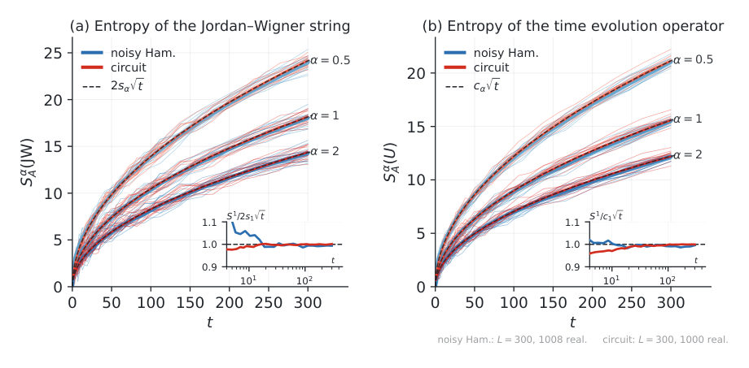
<figcaption class="paper-figure-caption"><b>Fig 1.</b> FIG. 1. Main result. Time evolution of the OSEE of the two operators of interest, the Jordan–Wigner string with endpoint in the middle of the chain and the time evolution operator, under fully random spatio–temporal disorder, at α = 1</figcaption>
</figure>
<figure class="paper-figure-card">
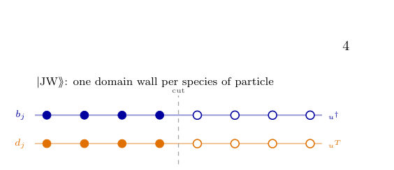
<figcaption class="paper-figure-caption"><b>Fig 2.</b> FIG. 2. Vectorization of the Jordan–Wigner string. In the combinations bj, dj of Eq. (20) the reference state is the vac- uum and the time evolution (25) is decoupled, propagating with u† and uT . The Jordan–Wigner string is the Fock state with all the modes to the left of the cut occupied on both species of particles, Eq. (22), so that its OSEE twice the en- tanglement entropy of a single domain wall (27).</figcaption>
</figure>
<figure class="paper-figure-card">
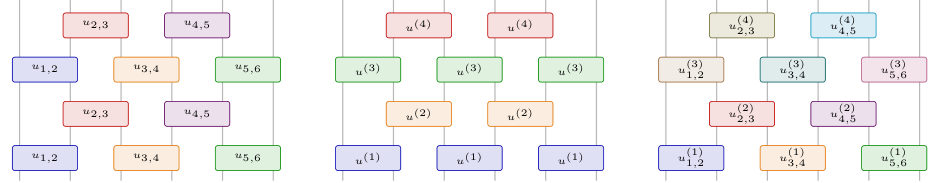
<figcaption class="paper-figure-caption"><b>Fig 3.</b> FIG. 3. The two models and the three types of disorder, on the same six sites and for two consecutive time steps. Top row: the noisy Hamiltonian of Eq. (50), each arc is the hopping dW t j of that bond. Bottom row: the brick–wall matchgate circuit, one Haar random U(2) gate per bond and per layer, odd and even bonds alternating. In both rows equal colours denote the same random variable. (i) Quenched disorder: the randomness depends on the bond but not on time, dW t j →Wjdt for the Hamiltonian and the same layer repeated at every step for the circuit. (ii) Purely temporal disorder: the randomness is redrawn at every instant but at each instant there are only two independent Itˆo increments,...</figcaption>
</figure>
<figure class="paper-figure-card">
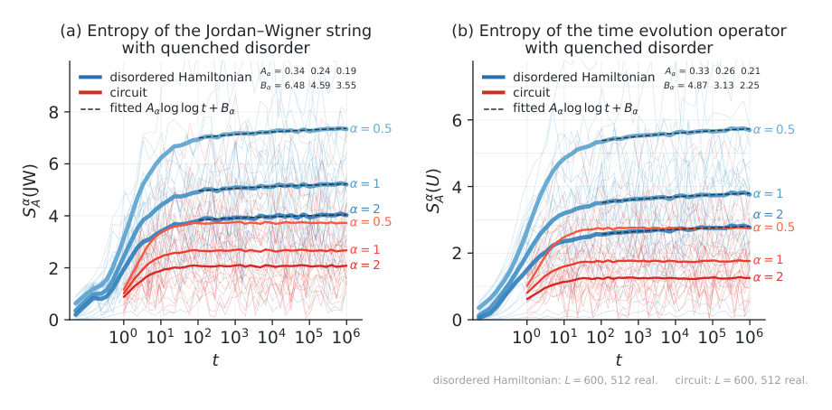
<figcaption class="paper-figure-caption"><b>Fig 4.</b> FIG. 4. OSEE of the Jordan–Wigner string (left) and of the time evolution operator (right) with quenched disorder, Sec. III C(i), for the R´enyi indices α = 1</figcaption>
</figure>
<figure class="paper-figure-card">
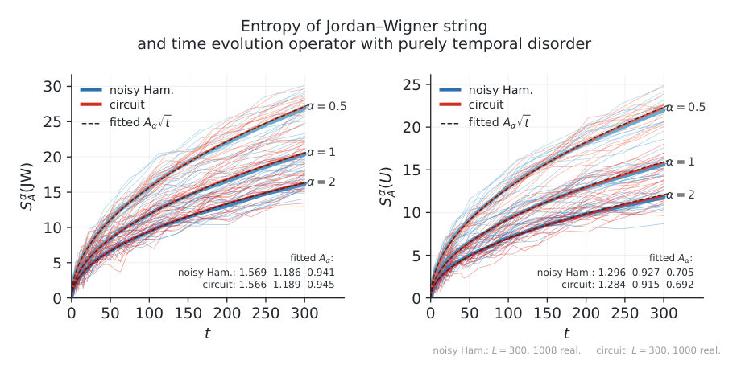
<figcaption class="paper-figure-caption"><b>Fig 5.</b> FIG. 5. OSEE of the Jordan–Wigner string and the time evolution operator, evolved with purely temporal disorder as explained in Sec. III C and in Fig. 3. We consider the Renyi indices α = 1 2, 1, 2. Faint lines are single realizations. We don’t have a closed analytical expression for the entropies; the values of the √</figcaption>
</figure>
</div>

<p><strong>Summary.</strong> This work analyzes how randomness affects the Operator Space Entanglement Entropy (OSEE) in 1D free fermion systems. The key finding is that disorder drives the OSEE to grow as $\mathcal{O}(\sqrt{t})$, a significant departure from the logarithmic growth expected in clean systems. The methodology involves mapping the quantum dynamics to solvable statistical models like the SSSEP.</p>
<p><strong>Why it may be interesting.</strong> The $\sqrt{t}$ scaling of entanglement entropy in disordered free fermion systems provides a quantitative measure of how randomness fundamentally alters quantum information spreading compared to integrable or clean systems.</p>
<details>
<summary>Detailed structure</summary>
<p><strong>Main problem.</strong> The study investigates the time evolution of the Operator Space Entanglement Entropy (OSEE) for local operators in 1D free fermions subjected to random space- and time-dependent evolution.</p>
<p><strong>Main result.</strong> In the presence of randomness, the OSEE of local spin operators involving a Jordan-Wigner string grows as $\mathcal{O}(\sqrt{t})$, contrasting with the logarithmic growth seen in clean systems.</p>
<p><strong>Method.</strong> The authors analytically compute average entropies by mapping the quantum models to the symmetric simple exclusion process (SSSEP) and utilize vectorization techniques for Gaussian operators.</p>
<p><strong>Model / system.</strong> The system is one-dimensional number-conserving free fermions, modeled using specific Hamiltonians like the Brownian Hamiltonian or a brick-wall matchgate circuit, and analyzed under various types of randomness (spatio-temporal disorder, quenched disorder).</p>
<p><strong>Key observables.</strong> Operator Space Entanglement Entropy (OSEE), $S_\alpha^A(O)$, for local operators and the evolution operator $U(t)$.</p>
<p><strong>Important parameters / regimes.</strong> The Rényi index $\alpha$, and the time $t$ (showing $\sqrt{t}$ or $\log \log t$ scaling).</p>
<p><strong>Assumptions / limitations.</strong> The analysis relies on an assumption of self-averaging, which is numerically supported, and the use of the Jordan-Wigner string operator as a key diagnostic.</p>
<p><strong>Figures summary.</strong> Figure 1 compares OSEE growth under fully random spatio-temporal disorder for the JW string and evolution operator. Figure 9 shows OSEE for the JW string under temporal disorder and translational invariance, comparing results to theoretical predictions.</p>
<p><strong>Paper structure.</strong> The paper first establishes the baseline for clean systems (logarithmic growth) before introducing randomness. It then analyzes specific random models (Brownian Hamiltonian, matchgate circuit) to derive the $\mathcal{O}(\sqrt{t})$ scaling. Finally, it contrasts this with other disorder types (quenched disorder) and examines the special case of momentum conservation ($
u=1$).</p>
</details>
<details>
<summary>Abstract</summary>
<p>We study the time evolution of the Operator Space Entanglement Entropy (OSEE) of one-dimensional number-conserving free fermions subject to a random space- and time-dependent evolution. It is known that, in free-fermion systems without randomness, the OSEE of \emph{local} operators grows at most \emph{logarithmically} in time. Here we show that, in the presence of randomness, the OSEE of local spin operators involving a Jordan-Wigner string grows as $\mathcal O(\sqrt t)$, for all values of the Rényi index. We establish this in two models: a Brownian Hamiltonian and a brick-wall matchgate circuit. We also consider the OSEE of the evolution operator, and we show that it also grows as $\mathcal O(\sqrt{t})$, in contrast with the linear growth generically expected without randomness. We analytically compute the average entropies of the two operators by mapping the quantum models to the symmetric simple exclusion process, relying on an assumption of self-averaging which we support numerically. We also consider two other types of randomness: random evolution in time that keeps spatial translation invariance, and quenched disorder. In the former case, we find that the OSEE also grows as $\sqrt{t}$. In the latter case, we find that the entropy grows as $\mathcal O( \log \log t)$ for Hamiltonian evolution both for local operators with a Jordan-Wigner string and for the evolution operator, whereas it remains bounded at all times in the brick-wall matchgate circuit.</p>
</details>
<p><sub><a href="#top">↑ back to top</a></sub></p>

<p><a id="paper-2610.04984"></a></p>
<h3 id="nonlinearity-induced-topological-phase-transitions-in-one-dimensional-systems-with-chiral-symmetry-a-real-space-treatment"><a href="http://arxiv.org/abs/2610.04984v1">Nonlinearity-induced Topological Phase Transitions in One-dimensional Systems with Chiral Symmetry: A Real-Space Treatment</a></h3>
<p><strong>Authors:</strong> Liu Bi Tao, Shilpi Roy, Jiangbin Gong<br>
<strong>Type:</strong> theory · <strong>Category:</strong> disordered systems and neural networks · <strong>PDF:</strong> <a href="https://arxiv.org/pdf/2610.04984v1">https://arxiv.org/pdf/2610.04984v1</a><br>
<strong>Analysis basis:</strong> full PDF text, analyzed in chunks
<strong>Topic relevance:</strong> <code>Frenkel-Kontorova</code> <strong>3/5</strong> · <code>analog quantum simulation</code> <strong>2/5</strong> · <code>driven-dissipative phase transition</code> <strong>2/5</strong> · <code>methods for driven-dissipative</code> <strong>2/5</strong> · <code>non-equilibrium universality</code> <strong>1/5</strong></p>
<div class="figure-strip-hint">↔ Scroll figures horizontally</div>
<div class="paper-figures-scroll">
<figure class="paper-figure-card">
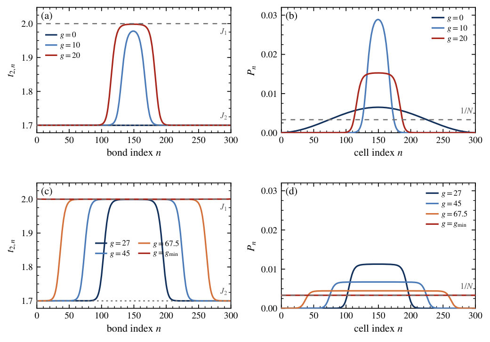
<figcaption class="paper-figure-caption"><b>Fig 1.</b> FIG. 1. Periodic case: Real-space profiles of nonlinear eigenstates for N = 300, J1 = 2, and J2 = 1.7. (a,b) Change of the effective intercell hopping t2,n = J2 + gρn and cell probability Pn for relatively small g. The broad linear state first becomes concentrated around the center and subsequently begins to re-expand. (c,d) Features of nonlinear states showing the outward expansion in the region near-J1 and the corresponding widening and lowering of Pn. Near gmin, the region extends across essentially the whole chain and Pn approaches a nearly uniform profile. In panels (a) and (c), the dashed and dotted lines indicate J1 and J2, respectively. In panels (b) and (d), the dashed line...</figcaption>
</figure>
<figure class="paper-figure-card">
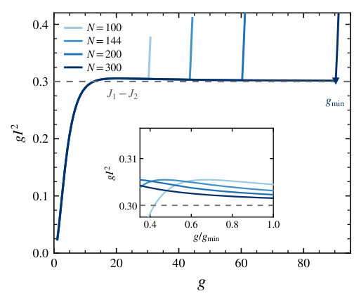
<figcaption class="paper-figure-caption"><b>Fig 2.</b> FIG. 2. Periodic case: gI2 as a function of g for J1 = 2, J2 = 1.7, and different system sizes N. The dashed line marks J1 −J2 = 0.3. With increasing N, the plateau approaches this value. The inset shows the same quantity as a function of g/gmin.</figcaption>
</figure>
<figure class="paper-figure-card">
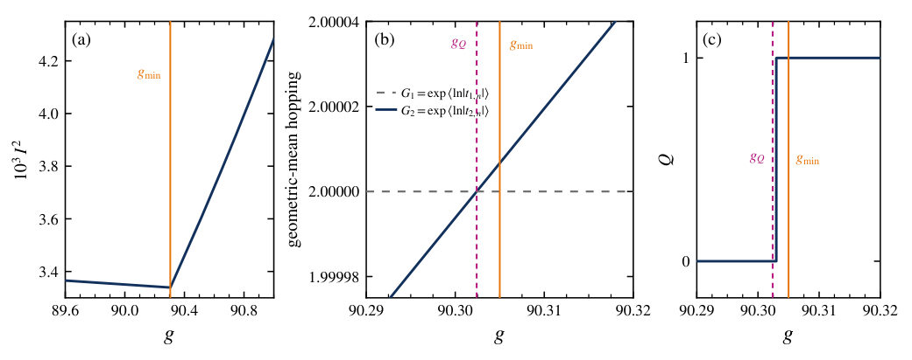
<figcaption class="paper-figure-caption"><b>Fig 3.</b> FIG. 3. Periodic case: Intensity minimum and topological transition with J1 = 2, J2 = 1.7, and N = 300. (a) Intensity I2 near its minimum at gmin. (b) Geometric-mean hopping scales G1 and G2, which become equal at gQ. (c) Real-space topological invariant Q, which changes from 0 to 1 at gQ. The magenta dashed and orange solid lines mark gQ and gmin, respectively.</figcaption>
</figure>
<figure class="paper-figure-card">
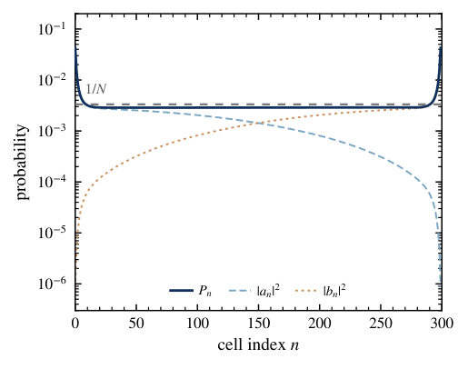
<figcaption class="paper-figure-caption"><b>Fig 4.</b> FIG. 4. Periodic case: Nonlinear edge state for N = 300, J1 = 2, J2 = 1.7, and g = 105, beyond both gmin and gQ. The cell probability Pn and sublattice probabilities |an|2 and |bn|2 show the two-edge profile, with the two sublattices pre- dominantly localized at opposite boundaries.</figcaption>
</figure>
<figure class="paper-figure-card">
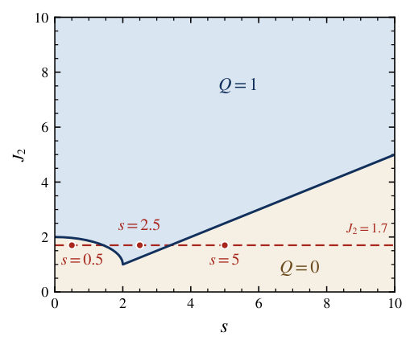
<figcaption class="paper-figure-caption"><b>Fig 5.</b> FIG. 5. Linear quasiperiodic case: Phase diagram for J1 = 2. The solid curve shows the analytical phase boundary Jc 2(s) = G1 [Eq. (45)], separating the topological Q = 1 and trivial Q = 0 phases. The horizontal dashed line marks J2 = 1.7, with s = 0.5, 2.5, and 5 indicating the weak, intermediate, and strong quasiperiodic regimes considered below.</figcaption>
</figure>
</div>

<p><strong>Summary.</strong> This paper investigates nonlinearity-induced topological phase transitions in 1D systems with quasiperiodic potentials using a real-space numerical method. It finds that the nonlinear transition point is distinct from simple boundary localization effects. The study provides a rigorous framework for analyzing topology when translational symmetry is broken by disorder or quasiperiodicity.</p>
<p><strong>Why it may be interesting.</strong> This work is highly relevant as it extends topological concepts from translationally invariant systems into the complex, non-periodic regimes common in condensed matter physics, requiring advanced numerical techniques.</p>
<details>
<summary>Detailed structure</summary>
<p><strong>Main problem.</strong> The study investigates how nonlinearity can induce topological phase transitions in one-dimensional systems, specifically addressing whether these transitions persist when translational symmetry is broken by quasiperiodic potentials.</p>
<p><strong>Main result.</strong> The nonlinear transition depends strongly on the quasiperiodic potential strength, and crucially, boundary localization alone (indicated by $g_{	ext{min}}$) is not a reliable signature for the true topological transition point ($g_Q$).</p>
<p><strong>Method.</strong> The research employs a real-space numerical approach to solve the nonlinear eigenvalue problem for a finite chain, comparing results derived from the topological invariant ($Q$) with characteristic nonlinear scales ($g_{	ext{min}}$ and $g_Q$).</p>
<p><strong>Model / system.</strong> The model is based on the periodic Su-Schrieffer-Heeger (SSH) chain extended with a Kerr-type nonlinearity. The analysis is performed in real space, which is necessary to handle the lack of translational invariance introduced by quasiperiodicity.</p>
<p><strong>Key observables.</strong> Topological invariant ($Q$), intensity minimum scale ($g_{	ext{min}}$), topological transition scale ($g_Q$), and probability density distribution ($P_n$).</p>
<p><strong>Important parameters / regimes.</strong> Nonlinearity strength ($g$), quasiperiodicity strength ($s$), and the relative positions of the state localization ($d$ and $D$) within the chain.</p>
<p><strong>Assumptions / limitations.</strong> The analysis relies on comparing two distinct nonlinear scales ($g_{	ext{min}}$ and $g_Q$) derived from different physical mechanisms (localization vs. topological invariant) to distinguish between them.</p>
<p><strong>Figures summary.</strong> Figures illustrate the comparison between $g_{	ext{min}}$ and $g_Q$ across varying chain lengths and localization positions, showing that the two scales are distinct and depend on complementary boundary distances ($d$ and $D$).</p>
<p><strong>Paper structure.</strong> The paper progresses from establishing the real-space framework using the periodic SSH model, to analyzing the nonlinear evolution in the quasiperiodic regime, culminating in a detailed comparison of the nonlinear scales $g_{	ext{min}}$ and $g_Q$ to characterize the topological transition.</p>
</details>
<details>
<summary>Abstract</summary>
<p>Nonlinearity can induce topological phase transitions in periodic systems. It is hence of considerable interest to examine if such transitions persist in the absence of translational symmetry. We address this question directly in real space, using the periodic Su-Schrieffer-Heeger (SSH) chain as a reference for understanding the effect of quasiperiodicity. How nonlinearity drives a chain towards a topological phase transition is found to depend strongly on the strength of the quasiperiodic potential. As the nonlinearity strength increases, we find that weak quasiperiodicity supports a transition from a trivial to a topological phase, whereas the intermediate regime does not have a topological phase transition. Under strong quasiperiodicity, pronounced boundary localization can develop well before a nonlinearity-induced topological transition. Our results show how nonlinearity may interplay with a quasiperiodic potential in inducing topological phase transitions and that boundary localization of nonlinear eigenstates alone may not be taken as a clear signature of topological edge states.</p>
</details>
<p><sub><a href="#top">↑ back to top</a></sub></p>

<p><a id="paper-2610.05202"></a></p>
<h3 id="universal-and-rigorous-asymptotic-convergence-of-standard-macroscopic-quantum-electrodynamics-to-the-modified-langevin-noise-formalism"><a href="http://arxiv.org/abs/2610.05202v1">Universal and rigorous asymptotic convergence of standard macroscopic quantum electrodynamics to the modified Langevin noise formalism</a></h3>
<p><strong>Authors:</strong> A. Ciattoni<br>
<strong>Type:</strong> theory · <strong>Category:</strong> other · <strong>PDF:</strong> <a href="https://arxiv.org/pdf/2610.05202v1">https://arxiv.org/pdf/2610.05202v1</a><br>
<strong>Analysis basis:</strong> full PDF text, analyzed in chunks
<strong>Topic relevance:</strong> <code>Keldysh / 2PI / non-Gaussian methods</code> <strong>3/5</strong> · <code>methods for driven-dissipative</code> <strong>3/5</strong> · <code>correlated / nonlocal dissipation</code> <strong>1/5</strong> · <code>driven-dissipative phase transition</code> <strong>1/5</strong> · <code>non-equilibrium universality</code> <strong>1/5</strong> · <code>quantum measurements</code> <strong>1/5</strong></p>
<div class="figure-strip-hint">↔ Scroll figures horizontally</div>
<div class="paper-figures-scroll">
<figure class="paper-figure-card">
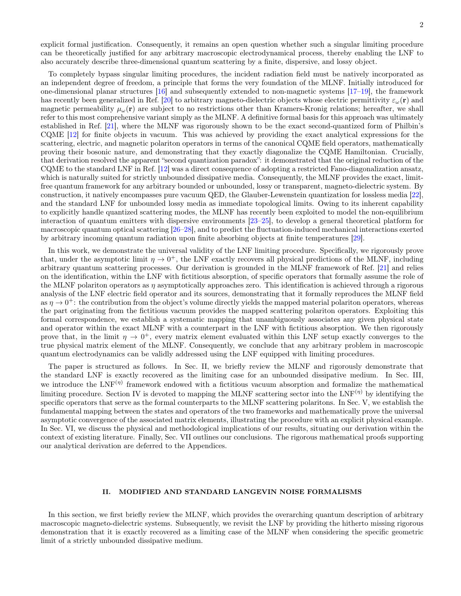
<figcaption class="paper-figure-caption"><b>Fig 1.</b> Low-resolution page preview, page 2</figcaption>
</figure>
<figure class="paper-figure-card">
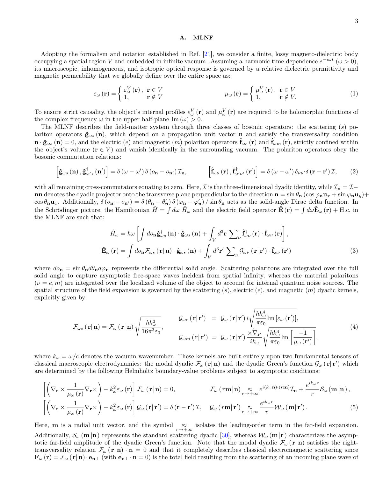
<figcaption class="paper-figure-caption"><b>Fig 2.</b> Low-resolution page preview, page 3</figcaption>
</figure>
<figure class="paper-figure-card">
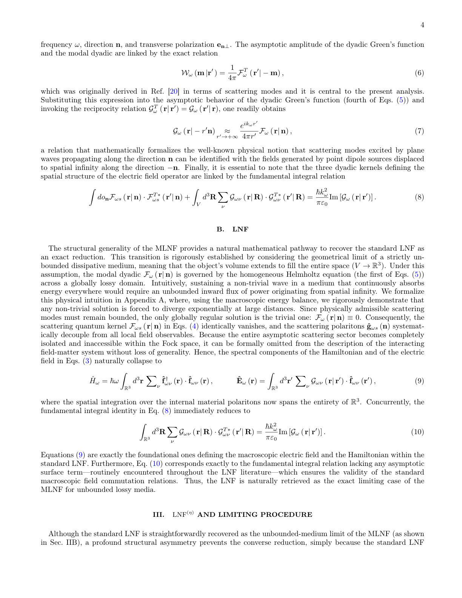
<figcaption class="paper-figure-caption"><b>Fig 3.</b> Low-resolution page preview, page 4</figcaption>
</figure>
<figure class="paper-figure-card">
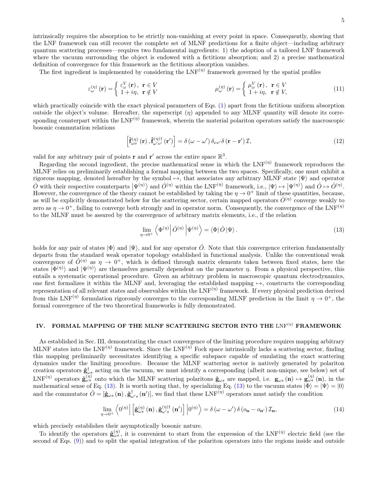
<figcaption class="paper-figure-caption"><b>Fig 4.</b> Low-resolution page preview, page 5</figcaption>
</figure>
<figure class="paper-figure-card">
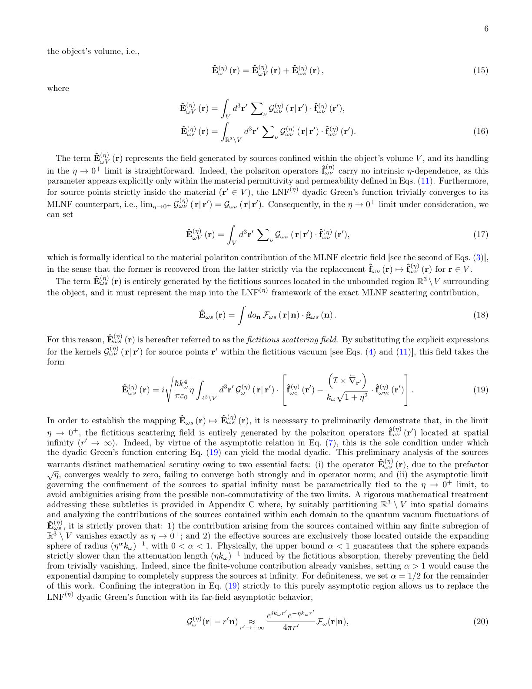
<figcaption class="paper-figure-caption"><b>Fig 5.</b> Low-resolution page preview, page 6</figcaption>
</figure>
</div>

<p><strong>Summary.</strong> This paper establishes the rigorous mathematical link between two formalisms for quantum electrodynamics: the standard Langevin noise formalism (LNF) and the more general modified Langevin noise formalism (MLNF). By constructing a precise mapping and proving the convergence of matrix elements, the authors demonstrate that the LNF is asymptotically valid even for complex scenarios like external quantum scattering, resolving key theoretical limitations in the field.</p>
<p><strong>Why it may be interesting.</strong> This work provides a crucial, rigorous mathematical foundation for applying standard quantum electrodynamics techniques (LNF) to complex, finite systems involving external quantum fields, resolving long-standing theoretical ambiguities.</p>
<details>
<summary>Detailed structure</summary>
<p><strong>Main problem.</strong> The paper aims to rigorously prove the universal asymptotic convergence of the standard Langevin noise formalism (LNF) to the more complete modified Langevin noise formalism (MLNF) in macroscopic quantum electrodynamics.</p>
<p><strong>Main result.</strong> It is rigorously shown that the LNF limiting procedure is universally valid because it recovers all physical predictions of the MLNF across all regimes, including complex quantum scattering processes.</p>
<p><strong>Method.</strong> The authors introduce a suitable mapping between MLNF states/observables and LNF entities augmented by fictitious vacuum absorption, and then prove convergence by showing that LNF matrix elements exactly approach the MLNF original as the fictitious absorption vanishes.</p>
<p><strong>Model / system.</strong> The system is macroscopic quantum electrodynamics in lossy media, modeled using both the standard LNF (requiring fictitious absorption for finite objects) and the MLNF (a canonical theory treating incident radiation as independent degrees of freedom).</p>
<p><strong>Key observables.</strong> Matrix elements of quantum observables, field operators (scattering, electric, magnetic polaritons), and expectation values of quantum states.</p>
<p><strong>Important parameters / regimes.</strong> The fictitious absorption parameter ($\eta$), the limit $\eta 	o 0^+$, and the nature of the quantum scattering processes.</p>
<p><strong>Assumptions / limitations.</strong> The primary assumption is that the mapping between the two formalisms is well-defined and that the interchange of the limit $\eta 	o 0^+$ with summations is mathematically rigorous.</p>
<p><strong>Figures summary.</strong> Not specified by the notes.</p>
<p><strong>Paper structure.</strong> The paper reviews the MLNF and shows LNF is a limit for unbounded media, then introduces the LNF($\eta$) framework, formalizes the limiting procedure, maps the MLNF scattering sector into LNF($\eta$), and finally proves the universal asymptotic convergence via matrix element analysis.</p>
</details>
<details>
<summary>Abstract</summary>
<p>The standard Langevin noise formalism (LNF) is a well-established approach for macroscopic quantum electrodynamics in unbounded lossy media, and accordingly, its application to finite objects requires endowing the surrounding vacuum with a fictitious absorption that is taken to asymptotically vanish. Existing justifications for such a singular limiting procedure have been mainly restricted to phenomena governed by vacuum fluctuations and medium-induced interactions (Casimir-Polder forces, thermal radiation, quantum emitter dynamics, etc.), thereby strictly excluding scenarios that involve the scattering of external quantum radiation. Conversely, the modified Langevin noise formalism (MLNF) has recently been established as the complete canonical quantum theory for arbitrary macroscopic systems and electromagnetic processes, entirely bypassing the need for limiting procedures, treating incident quantum radiation fields as independent degrees of freedom, and exactly reducing to the LNF for unbounded media. In this work, we demonstrate that the LNF limiting procedure is universally valid by showing that it recovers any physical prediction of the MLNF across all regimes, including arbitrary quantum scattering processes. Specifically, we introduce a suitable mapping associating any MLNF state and observable with a corresponding entity within the LNF augmented by fictitious vacuum absorption. We then rigorously prove that, as the fictitious absorption tends to zero, every LNF matrix element constructed via this mapping exactly converges to its MLNF original, so that the limiting procedure establishes the asymptotic convergence of the LNF to the MLNF.</p>
</details>
<p><sub><a href="#top">↑ back to top</a></sub></p>

<p><a id="paper-2610.04068"></a></p>
<h3 id="interaction-aware-embedding-optimization-for-neutral-atom-quantum-processors"><a href="http://arxiv.org/abs/2610.04068v1">Interaction-Aware Embedding Optimization for Neutral-Atom Quantum Processors</a></h3>
<p><strong>Authors:</strong> Clément de Terrasson de Montleau, Victor Drouin-Touchette, Wesley Coelho<br>
<strong>Type:</strong> theory · <strong>Category:</strong> other · <strong>PDF:</strong> <a href="https://arxiv.org/pdf/2610.04068v1">https://arxiv.org/pdf/2610.04068v1</a><br>
<strong>Analysis basis:</strong> full PDF text, analyzed in chunks
<strong>Topic relevance:</strong> <code>QC/QI experiment</code> <strong>3/5</strong> · <code>Rydberg arrays</code> <strong>3/5</strong> · <code>analog quantum simulation</code> <strong>3/5</strong></p>
<div class="figure-strip-hint">↔ Scroll figures horizontally</div>
<div class="paper-figures-scroll">
<figure class="paper-figure-card">
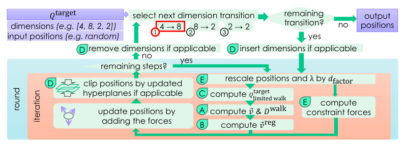
<figcaption class="paper-figure-caption"><b>Fig 1.</b> Fig. 1. General workflow of BLaDE. Letter tags are described in corresponding subsections of Sec. II. An example of a sequence of dimensions to cross is given starting on the red rectangle transition.</figcaption>
</figure>
<figure class="paper-figure-card">
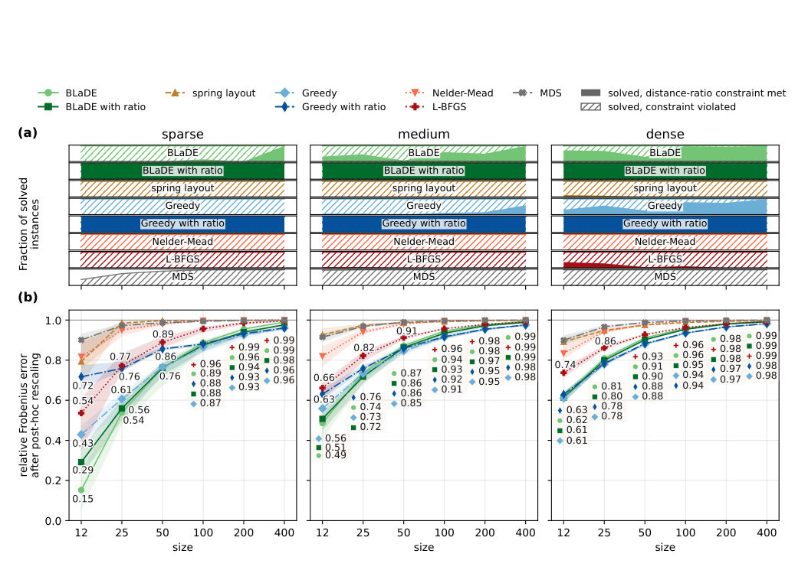
<figcaption class="paper-figure-caption"><b>Fig 2.</b> Fig. 2. Embedding results for the weighted random dataset. The x-axes represent the sizes of the instances. (a) Fraction of solved instances. The only failures correspond to MDS on small disconnected graphs because of infinite distances. A plain color means it also follows the distance-ratio constraint. (b) Quality of the found solutions given by the relative Frobenius error ∥Qtarget−Q∥2</figcaption>
</figure>
<figure class="paper-figure-card">

<figcaption class="paper-figure-caption"><b>Fig 3.</b> Fig. 3. Embedding results for the molecular datasets. (a) Fractions of UD-valid instances. On the considered instances, the distance ratio has additionally always been met for free, except on one instance for GEAN due to a too short pair. As an illustration, examples of UD-valid solutions are also drawn in each dataset for the 2 best methods. (b) Quality of the UD solutions from Eq. 13 as 2-dimensional log-log boxplots. The lower, the better. Only UD-valid solutions are included, and methods that did not return any are omitted.</figcaption>
</figure>
<figure class="paper-figure-card">

<figcaption class="paper-figure-caption"><b>Fig 4.</b> Figure 2 reports the corresponding results. The subplot 2a shows the fraction of solved instances, always at 100% except for MDS on small disconnected graphs. The plain colored regions indicate embeddings that also satisfy the imposed distance-ratio constraint. BLaDE and Greedy tend to naturally satisfy the distance-ratio constraint on denser and larger instances, especially BLaDE, and the constrained versions always satisfy it. The other methods rarely meet the distance-ratio constraint, as they do not include the constraint, and do not get it for free either.</figcaption>
</figure>
</div>

<p><strong>Summary.</strong> This paper addresses the difficult optimization problem of positioning neutral atoms to achieve specific, desired pairwise interactions for quantum computation. The authors propose BLaDE, a novel force-directed algorithm that surpasses existing methods by optimizing directly on the interaction matrix rather than just the physical distances. This advancement is crucial for scaling up quantum processors by ensuring high-fidelity mapping of complex quantum circuits onto physical hardware layouts.</p>
<p><strong>Why it may be interesting.</strong> This work directly tackles the hardware-software interface challenge in quantum computing by providing a robust, physics-informed optimization tool for mapping abstract quantum circuits onto physical hardware constraints.</p>
<details>
<summary>Detailed structure</summary>
<p><strong>Main problem.</strong> The core challenge is finding physical arrangements (atom positions) that realize a desired, complex pairwise interaction pattern ($\mathbf{Q}_{	ext{target}}$) required for quantum computation.</p>
<p><strong>Main result.</strong> The proposed BLaDE algorithm significantly improves the feasibility and quality of embedding solutions compared to existing methods across various instance sizes and graph types.</p>
<p><strong>Method.</strong> The authors introduce BLaDE, a novel force-directed optimization method that directly minimizes the difference between the target interaction matrix and the realized interaction matrix, incorporating latent dimensions to escape local minima.</p>
<p><strong>Model / system.</strong> The work focuses on neutral-atom quantum processors utilizing optical tweezer arrays, where the system dynamics are governed by a Hamiltonian involving pairwise interactions ($Q_{ij} \propto D_{ij}^{-6}$).</p>
<p><strong>Key observables.</strong> Relative Frobenius error ($\lVert \mathbf{Q}_{	ext{target}} - \mathbf{Q} 
Vert^2 / \lVert \mathbf{Q}_{	ext{target}} 
Vert^2$), Unit-Disk (UD) proximity, and the fraction of solvable instances.</p>
<p><strong>Important parameters / regimes.</strong> The inter-atomic interaction strength ($Q_{ij}$), the target interaction matrix ($\mathbf{Q}_{	ext{target}}$), and optimization parameters like the maximum walk distance ($ ext{d}_{    ext{max walk}}$).</p>
<p><strong>Assumptions / limitations.</strong> The primary assumption is that the complex, non-convex optimization problem can be effectively navigated using a force-directed approach augmented with latent dimension exploration.</p>
<p><strong>Figures summary.</strong> Figure 2 compares BLaDE against other methods on weighted random instances using metrics like solved fraction and error. Figure 3 shows BLaDE's superior performance on molecular graphs, particularly in achieving Unit-Disk (UD) validity.</p>
<p><strong>Paper structure.</strong> The paper first establishes the physical problem (mapping target interactions to geometry) and critiques existing methods. It then details the BLaDE algorithm, which involves force calculation, latent dimension optimization, and constraint enforcement. Finally, it benchmarks BLaDE against multiple baselines on both random and molecular graph datasets.</p>
</details>
<details>
<summary>Abstract</summary>
<p>Neutral atom-based quantum computers have the ability to dynamically reshape the qubit register geometry between experimental runs. This capability enables different types of problems to be mapped directly onto the hardware, significantly enhancing the efficiency of solving, for instance, complex optimization and machine learning use-cases. However, this flexibility requires finding atom positions to implement target pairwise interactions, inducing a difficult nonconvex optimization for setting up the quantum machine. In this work, we introduce a new force-directed method that targets interactions to encode the input problem on the quantum computer. Numerical results show that our new method can improve embedding feasibility and solution quality by orders of magnitude, and remains reliable on the largest instances.</p>
</details>
<p><sub><a href="#top">↑ back to top</a></sub></p>

<p><a id="paper-2610.04230"></a></p>
<h3 id="quantum-sensing-applications-in-consumer-electronics-emerging-methods-and-near-term-use-cases"><a href="http://arxiv.org/abs/2610.04230v1">Quantum Sensing Applications in Consumer Electronics: Emerging Methods and Near-Term Use Cases</a></h3>
<p><strong>Authors:</strong> Sounak Bhowmik, Himanshu Thapliyal<br>
<strong>Type:</strong> both · <strong>Category:</strong> other · <strong>PDF:</strong> <a href="https://arxiv.org/pdf/2610.04230v1">https://arxiv.org/pdf/2610.04230v1</a><br>
<strong>Analysis basis:</strong> full PDF text, analyzed in chunks
<strong>Topic relevance:</strong> <code>QC/QI experiment</code> <strong>3/5</strong> · <code>analog quantum simulation</code> <strong>2/5</strong> · <code>quantum measurements</code> <strong>2/5</strong> · <code>Rydberg arrays</code> <strong>1/5</strong> · <code>quantum optics experiment</code> <strong>1/5</strong></p>
<div class="figure-strip-hint">↔ Scroll figures horizontally</div>
<div class="paper-figures-scroll">
<figure class="paper-figure-card">

<figcaption class="paper-figure-caption"><b>Fig 1.</b> FIGURE 1: Overview of the quantum sensing landscape for consumer electronics. The quantum-mechanical platforms couple to physical quantities such as magnetic and electric fields, time and frequency, temperature, and gravity, thereby enabling applications in navigation, healthcare, imaging and user interfaces, RF and wireless systems, and the IoT. The key takeaway is that each quantum sensing platform maps most naturally onto the application blocks that depend on the physical quantities it is most sensitive to. For a clearer overview of the generic state-preparation, signal-interaction, and readout sequence involved in a holistic quantum sensing process, refer to Fig 2.</figcaption>
</figure>
<figure class="paper-figure-card">

<figcaption class="paper-figure-caption"><b>Fig 2.</b> FIGURE 2: Representative workflow for integrating a coherently controlled quantum sensor into a consumer electronics system. A. A Ramsey-type or related pulsed protocol applied to a quantum sensing platform comprises the following steps: the sensor is initialized (1), prepared in a sensitive superposition state (2), allowed to evolve during the sensing interval t (3), mapped back to the measurement basis (4), and measured repeatedly (5) to estimate the associated signal V (t). The sensing process begins by initializing the sensor in a well-defined reference state (|0⟩). The preparation operation ˆUa (typically a π</figcaption>
</figure>
</div>

<p><strong>Summary.</strong> This paper reviews the near-term potential of quantum sensing platforms—including NV centers, atomic vapor cells, and Rydberg atoms—for upgrading consumer electronics. It establishes a framework showing that quantum sensors will augment existing classical systems, particularly for weak-field detection and navigation in GPS-denied environments. The key takeaway is that system integration and manufacturability are more critical hurdles than achieving peak fundamental sensitivity.</p>
<p><strong>Why it may be interesting.</strong> It provides a comprehensive survey of how fundamental AMO techniques (like spin resonance in NV centers or atomic coherence in vapor cells) are being engineered for practical, solid-state, and portable applications, bridging fundamental physics to engineering constraints.</p>
<details>
<summary>Detailed structure</summary>
<p><strong>Main problem.</strong> Improving sensing capabilities in consumer electronics where classical approaches are limited by size, power, and noise.</p>
<p><strong>Main result.</strong> Quantum sensing is best positioned to upgrade specific measurement components within hybrid classical-quantum systems, rather than replacing entire devices.</p>
<p><strong>Method.</strong> The paper reviews a 'platform-and-application framework' by detailing general sensing protocols and reviewing four key quantum sensing platforms.</p>
<p><strong>Model / system.</strong> The platforms reviewed include Nitrogen-Vacancy (NV) centers in diamond, atomic vapor cells (e.g., Rb), Rydberg atomic sensors, and photonic quantum sensors. The sensing mechanism relies on coherently controlling quantum states to detect external perturbations.</p>
<p><strong>Key observables.</strong> Sensitivity ($ ext{aT}/\sqrt{  ext{Hz}}$, $    ext{nV}     ext{ cm}^{-1}/\sqrt{    ext{Hz}}$), positioning error (m), and detection limits (pg/mL).</p>
<p><strong>Important parameters / regimes.</strong> Transduction parameter ($\gamma$), coherence/relaxation time ($T_{\chi}$), and operating temperature (room temperature capability is a key metric).</p>
<p><strong>Assumptions / limitations.</strong> The analysis assumes that system-level integration and co-design of the sensor with estimation stacks are crucial for practical value.</p>
<p><strong>Figures summary.</strong> Figure 1 maps quantum sensing platforms to physical quantities and applications; Figure 2 details the generic sensing workflow (state-preparation, signal-interaction, readout).</p>
<p><strong>Paper structure.</strong> The paper establishes the problem, outlines the general sensing protocol, and then reviews specific platforms (NV centers, atomic vapor cells, Rydberg sensors, photonics) through case studies in navigation, healthcare, and RF/IoT.</p>
</details>
<details>
<summary>Abstract</summary>
<p>Quantum sensing is emerging as a practical means of improving sensing capabilities in consumer electronics, particularly where size, power, and noise constrain classical approaches. In this paper, we reviewed the near-term applicability of quantum sensing using a platform-and-application framework. Within this framework, we outlined the general sensing protocol and discussed the working of the four key quantum sensing platforms relevant to consumer electronics: nitrogen-vacancy (NV) centers, atomic vapor cells, Rydberg atomic sensors, and photonic quantum sensors. Through case studies involving navigation and positioning, healthcare and wearables, radio-frequency (RF) and wireless systems, the Internet of Things (IoT), and imaging, we examined the tangible engineering advantages offered by quantum sensing. Rather than replacing devices outright, quantum sensing is more likely to earn its place in the near-term by upgrading specific measurement components within hybrid classical-quantum systems. Right now, the clearest opportunities are in weak-field detection, compact RF reception, and sensing that remains robust in noise.</p>
</details>
<p><sub><a href="#top">↑ back to top</a></sub></p>

<p><a id="paper-2610.05493"></a></p>
<h3 id="spin-orbit-induced-gauge-field-and-spin-hall-effects-in-quasi-paraxial-fluids-of-light"><a href="http://arxiv.org/abs/2610.05493v1">Spin-orbit-induced gauge field and spin Hall effects in quasi-paraxial fluids of light</a></h3>
<p><strong>Authors:</strong> Caroline Stier, Nicolas Cherroret<br>
<strong>Type:</strong> theory · <strong>Category:</strong> other · <strong>PDF:</strong> <a href="https://arxiv.org/pdf/2610.05493v1">https://arxiv.org/pdf/2610.05493v1</a><br>
<strong>Analysis basis:</strong> full PDF text, analyzed in chunks
<strong>Topic relevance:</strong> <code>analog quantum simulation</code> <strong>3/5</strong> · <code>Keldysh / 2PI / non-Gaussian methods</code> <strong>2/5</strong> · <code>interference shaping light</code> <strong>2/5</strong> · <code>methods for driven-dissipative</code> <strong>1/5</strong> · <code>quantum measurements</code> <strong>1/5</strong></p>
<div class="figure-strip-hint">↔ Scroll figures horizontally</div>
<div class="paper-figures-scroll">
<figure class="paper-figure-card">

<figcaption class="paper-figure-caption"><b>Fig 1.</b> FIG. 1. Intensity distribution δI(x, y)/I0 of a fluid of light flowing past a Gaussian-shaped obstacle at M = 1.36, above the Landau threshold for superfluidity, in the absence (left panel) and presence of spin-orbit coupling (SOC) (middle panel, σ = 1; right panel, σ = −1). The intensity distribution is obtained by numerically evaluating Eq. (21). In the absence of the gauge field, it exhibits a characteristic Cherenkov radi- ation pattern, which becomes chiral in its presence: for σ = 1, the intensity is attenuated for y &gt; 0 and enhanced for y &lt; 0, with the opposite behavior for σ = −1. Parameters: R/ξ = 1, q0ξ = 0.96 (M = 1.36), V0/gI0 = 0.2, kξ = 2.</figcaption>
</figure>
<figure class="paper-figure-card">

<figcaption class="paper-figure-caption"><b>Fig 2.</b> FIG. 2. Intensity distribution of the optical superflow past a Gaussian-shaped obstacle for M = 0.28 (the obstacle is indicated as a dashed circle). Left: intensity perturbation δI(x, y)/I0|σ=1 computed numerically from Eq. (21). Al- though the spin-orbit gauge-field contribution is included, the resulting pattern is dominated by the approximately isotropic depletion around the obstacle. Right: difference be- tween the intensity patterns obtained for opposite helicities, δI(x, y)/I0|σ=1 −δI(x, y)/I0|σ=−1, which isolates the contri- bution that is odd under σ →−σ and reveals the dipolar structure associated with the gauge field. The inset shows a cut of the intensity difference along the y &gt;...</figcaption>
</figure>
<figure class="paper-figure-card">

<figcaption class="paper-figure-caption"><b>Fig 3.</b> FIG. 3. Transverse spin Hall force Fy/I0 exerted by the fluid on the obstacle due to the spin-orbit gauge field. The force is small but nonzero in the superfluid regime M &lt; 1, and becomes much larger in the normal regime M &gt; 1. The small kink near M ≃1.1 corresponds to the crossover at which the force changes from reactive to dissipative. Parameters: σ = +1, R/ξ = 1, V0/gI0 = 0.05, and kξ = 1.5.</figcaption>
</figure>
<figure class="paper-figure-card">

<figcaption class="paper-figure-caption"><b>Fig 4.</b> FIG. 4. Trajectory (38) of the probe center of mass in the effective trap created by a quasi-harmonic background beam (schematically represented by the light gray shading). The dotted curve shows the trajectory in the absence of the spin-orbit coupling (SOC), while the solid blue curve shows the trajectory when its effect is taken into account. The solid green curve represents the projection of the latter onto the (x, y) plane, highlighting the precession. Here we chose |ωSO/ωt| = 0.2 and σ = 1.</figcaption>
</figure>
</div>

<p><strong>Summary.</strong> This theoretical work demonstrates that the spin-orbit interaction in light propagating through nonlinear media generates an effective, self-consistent gauge field. This field acts like a Lorentz force, modifying the fluid dynamics of the light beam. The results predict observable effects such as chiral asymmetries and wave packet precession, connecting quantum optics to condensed matter phenomena.</p>
<p><strong>Why it may be interesting.</strong> This work bridges quantum optics, nonlinear wave physics, and condensed matter concepts (like gauge fields and spin Hall effects) by showing how intrinsic light-matter interactions generate effective quantum mechanical forces.</p>
<details>
<summary>Detailed structure</summary>
<p><strong>Main problem.</strong> The paper investigates the effective gauge field and spin Hall effects arising from the intrinsic spin-orbit interaction of light propagating in nonlinear Kerr media.</p>
<p><strong>Main result.</strong> The spin-orbit interaction generates a self-consistent effective gauge field that induces an effective Lorentz force, leading to phenomena like chiral deformation and wave packet precession.</p>
<p><strong>Method.</strong> The analysis involves systematically expanding the governing nonlinear wave equations around the paraxial limit to derive leading nonparaxial corrections.</p>
<p><strong>Model / system.</strong> The physical system is quasi-paraxial fluids of light propagating in nonlinear Kerr media. The dynamics are governed by nonlinear Schrödinger-like equations incorporating spin-orbit coupling effects.</p>
<p><strong>Key observables.</strong> Effective gauge field strength, effective Lorentz force, transverse spin Hall force, and the center-of-mass precession trajectory of the optical wave packet.</p>
<p><strong>Important parameters / regimes.</strong> Light helicity, nonlinearity strength ($g, g'$), and the nonparaxiality parameter ($\epsilon$).</p>
<p><strong>Assumptions / limitations.</strong> The analysis relies on the quasi-paraxial approximation and systematic expansion of the full Maxwell equations.</p>
<p><strong>Figures summary.</strong> Figures illustrate the intensity distribution showing chiral asymmetry in the superfluid regime and the precession of the wave packet's center-of-mass trajectory in the presence of SOC.</p>
<p><strong>Paper structure.</strong> The paper progresses from the full nonlinear wave equation to the paraxial approximation, derives the effective gauge field and Lorentz force, and then applies this framework to model specific physical consequences like flow past an obstacle and wave packet trapping.</p>
</details>
<details>
<summary>Abstract</summary>
<p>We show that quasi-paraxial fluids of light propagating in nonlinear Kerr media naturally experience an effective gauge field arising from the intrinsic spin-orbit interaction of light encoded in Maxwell equations. By deriving the leading nonparaxial corrections to the nonlinear Schrödinger equation governing the fluid evolution, we find that, for circularly polarized beams, these corrections generate an effective Lorentz force that modifies the fluid dynamics. Remarkably, the corresponding gauge field is not externally imposed but self-consistently generated by the fluid itself, with its sign controlled by the light helicity and its magnitude governed by the spatial variations of the nonlinear refractive index. We illustrate the physical consequences of this gauge field in two configurations: the chiral deformation of normal and superfluid flows past an obstacle, accompanied by a transverse spin Hall force, and the cumulative precession of an optical wave packet trapped in a focusing fluid.</p>
</details>
<p><sub><a href="#top">↑ back to top</a></sub></p>

<p><a id="paper-2610.06268"></a></p>
<h3 id="adiabatic-tracking-and-optimal-schedules-for-classical-and-quantum-gibbs-state-preparation"><a href="http://arxiv.org/abs/2610.06268v1">Adiabatic tracking and optimal schedules for classical and quantum Gibbs-state preparation</a></h3>
<p><strong>Authors:</strong> Pedro C. S. Costa, Mauro E. S. Morales, Dong An, Kaur Kristjuhan<br>
<strong>Type:</strong> theory · <strong>Category:</strong> statistical mechanics · <strong>PDF:</strong> <a href="https://arxiv.org/pdf/2610.06268v1">https://arxiv.org/pdf/2610.06268v1</a><br>
<strong>Analysis basis:</strong> full PDF text, analyzed in chunks
<strong>Topic relevance:</strong> <code>analog quantum simulation</code> <strong>3/5</strong> · <code>correlated / nonlocal dissipation</code> <strong>1/5</strong> · <code>driven-dissipative phase transition</code> <strong>1/5</strong> · <code>methods for driven-dissipative</code> <strong>1/5</strong> · <code>non-equilibrium universality</code> <strong>1/5</strong> · <code>scars &amp; prethermalization</code> <strong>1/5</strong></p>
<div class="figure-strip-hint">↔ Scroll figures horizontally</div>
<div class="paper-figures-scroll">
<figure class="paper-figure-card">

<figcaption class="paper-figure-caption"><b>Fig 1.</b> FIG. 1. Comparison of schedule design and tracking performance for the analytically solvable two-state model with β0 = 0 and βf = 4. (a) Inverse-temperature schedules β(t) for the main theoretically motivated protocols. The variance-only schedule depends only on the Gibbs-state variation, the friction schedule follows the constant-excess-power prescription, the gap-only schedule adapts to the relaxation gap, and the local tracking schedule combines the gap and Gibbs-state variation according to the tracking metric. (b) Instantaneous weighted tracking error ej = ∥pj −πj∥j for T = 200 Markov steps. Although ej contains contributions generated at previous steps, it need not increase...</figcaption>
</figure>
<figure class="paper-figure-card">

<figcaption class="paper-figure-caption"><b>Fig 2.</b> FIG. 2. Tracking and terminal-preparation performance for the lazy SK chain at T = 6400, using the same disorder realizations for every schedule at each system size n. We have in (a) the mean maximum instantaneous weighted tracking error emax, which measures the largest error from the instantaneous Gibbs path during the complete annealing evolution. In (b) we show the mean final total-variation error efinal TV , which measures only the accuracy of the final Gibbs-state preparation. The different ordering of the schedules in the two plots demonstrates that minimizing transient tracking error and minimizing terminal preparation error are distinct objectives.</figcaption>
</figure>
<figure class="paper-figure-card">

<figcaption class="paper-figure-caption"><b>Fig 3.</b> FIG. 3. Endpoint race performance for the lazy SK chain using the same disorder realizations for every schedule at each system size n. We have in (a) the mean first sampled number of Markov steps T Pgs 0.99 required to reach qsucc(T) ≥0.99. The mean is evaluated over realizations that reach the target within T ∈{100, 200, 400, 800, 1600, 3200, 6400, 12800}. In (b) we have the race statistic for the normalized energy target qAEAR(T) ≥0.99. The vertical axes are logarithmic and the dashed curves denote finite-size log-linear fits. These fits are shown only as guides to the observed finite-size behaviour and are not interpreted as asymptotic scaling laws.</figcaption>
</figure>
<figure class="paper-figure-card">

<figcaption class="paper-figure-caption"><b>Fig 4.</b> FIG. 4. Inverse-temperature schedules for the n = 18 SK transfer experiment. The predicted Gap-only schedule is constructed from the extrapolated spectral-gap bδ18(β) obtained from the n = 6, 8, 10, 12 results. The predicted Tracking schedule combines the same extrapolated gap with the energy standard deviation bV (β) sampled directly from the n = 18 Metropolis dynamics. Both predicted schedules allocate a larger fraction of the evolution to the low-temperature region than the linear interpolation.</figcaption>
</figure>
<figure class="paper-figure-card">

<figcaption class="paper-figure-caption"><b>Fig 5.</b> FIG. 5. Terminal performance for the n = 18 SK extrapolation study using the linear, predicted Tracking, and predicted Gap-only schedules. (a) Mean normalized approximation-energy ratio qAEAR. (b) Mean normalized ground-state probability qsucc. Error bars show the variation across disorder realizations. Both gap-informed schedules outperform the linear schedule at finite T, more significantly for the ground-state probability. The n = 18 gap behavior is extrapolated from the exactly analyzed systems n = 6, 8, 10, 12 and should therefore be interpreted as a prediction rather than a rigorous gap estimate.</figcaption>
</figure>
</div>

<p><strong>Summary.</strong> This work establishes a discrete adiabatic framework for preparing Gibbs states in both classical and quantum systems. It derives optimal scheduling rates by combining error contraction and rate-of-change effects, showing that quantum walks can achieve a superior scaling ($O(\delta^{-1/2})$) compared to classical methods ($O(\delta^{-1})$). This provides rigorous guidelines for designing efficient quantum annealing protocols.</p>
<p><strong>Why it may be interesting.</strong> The explicit derivation of optimal, gap-adapted schedules that improve the scaling of quantum adiabatic processes compared to classical relaxation times is highly relevant for understanding quantum simulation and thermalization dynamics.</p>
<details>
<summary>Detailed structure</summary>
<p><strong>Main problem.</strong> The paper develops and compares adiabatic tracking schedules for preparing Gibbs states in both classical and quantum systems.</p>
<p><strong>Main result.</strong> For quantum systems, the optimal schedule can achieve a quantum adiabatic cost scaling of $O(\delta_{\min}^{-1/2})$, representing a quadratic improvement over the classical $O(\delta_{\min}^{-1})$ relaxation scale.</p>
<p><strong>Method.</strong> The authors derive tracking theorems for Markov chains and apply the discrete quantum adiabatic theorem, analyzing finite-difference terms to determine optimal scheduling rates.</p>
<p><strong>Model / system.</strong> The analysis covers classical reversible Markov chains (e.g., Metropolis dynamics on the SK model) and their quantum analogues using temperature-dependent Szegedy quantum walks.</p>
<p><strong>Key observables.</strong> Tracking error ($  ext{e}<em ext_max="ext{max">T$), maximum instantaneous error ($ ext{e}</em>$), spectral gap ($\delta$), and energy fluctuation scale ($V(eta)$).}</p>
<p><strong>Important parameters / regimes.</strong> Spectral gap ($\delta$), energy fluctuation scale $V(eta) = \sqrt{	ext{Var}_{\pi_eta}(E)}$, and the inverse temperature $eta$.</p>
<p><strong>Assumptions / limitations.</strong> The quantum speedup requires the use of suitably gap-adapted schedules, and the classical analysis assumes the Markov chain is reversible.</p>
<p><strong>Figures summary.</strong> The notes describe comparisons of various schedules (Tracking, Gap-only, Friction, Linear) on the two-state and SK models, showing performance metrics like $  ext{e}_{    ext{max}}$ and final preparation quality.</p>
<p><strong>Paper structure.</strong> The paper is structured by first developing the classical adiabatic tracking framework, then extending this to the quantum domain using quantum walks, and finally comparing the resulting optimal schedules across different physical models.</p>
</details>
<details>
<summary>Abstract</summary>
<p>We develop a discrete adiabatic framework for Gibbs-state preparation in classical and quantum optimisation algorithms. For finite time-inhomogeneous reversible Markov chains, we derive a tracking theorem that bounds the distance from the evolving distribution to the instantaneous stationary state by combining two effects: contraction of previously accumulated error by the Markov dynamics and the new error generated as the stationary distribution changes from one step to the next. For Gibbs paths, this leads to explicit step-complexity bounds and to gap- and fluctuation-adapted schedules controlled by the Markov-chain spectral gap and the energy-fluctuation scale $V(β)=\sqrt{\operatorname{Var}_{π_β}(E)}$. In the weak-damping regime, the resulting schedule takes the form $\dotβ\proptoδ(β)/V(β)$. We then apply the discrete quantum adiabatic theorem to temperature-dependent Szegedy quantum walks. The quantum-walk eigenphase gap satisfies $Δ_w=Θ(\sqrtδ)$, where $δ$ is the spectral gap of the underlying Markov chain. By analysing the finite-difference terms entering the theorem, we show that this square-root spectral amplification translates into a quadratic improvement in the gap dependence only for suitably gap-adapted schedules. Under the corresponding regularity conditions, the quantum adiabatic cost scales as $O(δ_{\min}^{-1/2})$, compared with the classical $O(δ_{\min}^{-1})$ relaxation scale.</p>
</details>
<p><sub><a href="#top">↑ back to top</a></sub></p>

<p><a id="paper-2610.06202"></a></p>
<h3 id="casimir-force-screening-by-a-quantum-boltzmann-plasma"><a href="http://arxiv.org/abs/2610.06202v1">Casimir force screening by a quantum Boltzmann plasma</a></h3>
<p><strong>Authors:</strong> Petr Brandyshev, Maksim Koniushenko, Yury Budkov<br>
<strong>Type:</strong> theory · <strong>Category:</strong> statistical mechanics · <strong>PDF:</strong> <a href="https://arxiv.org/pdf/2610.06202v1">https://arxiv.org/pdf/2610.06202v1</a><br>
<strong>Analysis basis:</strong> full PDF text, analyzed in chunks
<strong>Topic relevance:</strong> <code>Keldysh / 2PI / non-Gaussian methods</code> <strong>3/5</strong> · <code>analog quantum simulation</code> <strong>1/5</strong> · <code>correlated / nonlocal dissipation</code> <strong>1/5</strong> · <code>driven-dissipative phase transition</code> <strong>1/5</strong> · <code>methods for driven-dissipative</code> <strong>1/5</strong> · <code>non-equilibrium universality</code> <strong>1/5</strong></p>
<div class="figure-strip-hint">↔ Scroll figures horizontally</div>
<div class="paper-figures-scroll">
<figure class="paper-figure-card">

<figcaption class="paper-figure-caption"><b>Fig 1.</b> Figure 1. Schematic representation of a two-component plasma confined between two parallel</figcaption>
</figure>
<figure class="paper-figure-card">

<figcaption class="paper-figure-caption"><b>Fig 2.</b> Figure 2. Force gradient for a dilute electron–proton plasma at T = 1200 K compared with the</figcaption>
</figure>
<figure class="paper-figure-card">

<figcaption class="paper-figure-caption"><b>Fig 3.</b> Figure 3. Force gradient for the effective Li+–electron plasma in liquid ammonia at T = 240 K.</figcaption>
</figure>
<figure class="paper-figure-card">

<figcaption class="paper-figure-caption"><b>Fig 4.</b> Figure 4. Comparison of the quantum and classical Li+–electron plasma predictions in the am-</figcaption>
</figure>
<figure class="paper-figure-card">

<figcaption class="paper-figure-caption"><b>Fig 5.</b> Figure 5. Difference between the classical and quantum plasma force gradients for the lithium–</figcaption>
</figure>
</div>

<p><strong>Summary.</strong> This work provides a detailed field-theoretical framework to calculate the Casimir force screening exerted by a quantum Boltzmann plasma between conducting plates. It successfully separates classical and quantum contributions, demonstrating that quantum effects manifest as a measurable correction to the force, particularly through the modification of the longitudinal dielectric response.</p>
<p><strong>Why it may be interesting.</strong> While focused on plasma physics, the rigorous application of finite-temperature field theory to boundary effects and the explicit calculation of quantum corrections to macroscopic forces are highly relevant to open quantum systems and quantum electrodynamics in structured media.</p>
<details>
<summary>Detailed structure</summary>
<p><strong>Main problem.</strong> The paper develops a finite-temperature field-theoretical description to calculate the Casimir interaction force between two perfectly conducting boundaries when the intervening gap is filled by a two-component quantum Boltzmann plasma.</p>
<p><strong>Main result.</strong> The theory quantifies the quantum correction to the Casimir force, showing that finite thermal de Broglie wavelengths modify the Matsubara response and that the longitudinal response structure matches the Lindhard dielectric function under formal correspondences.</p>
<p><strong>Method.</strong> The calculation employs field theory, treating the electromagnetic field in the Gaussian approximation and representing particle quantum motion via imaginary-time worldlines. The free energy is derived from the partition function, separating longitudinal and transverse response contributions.</p>
<p><strong>Model / system.</strong> The system is a two-component Coulomb plasma (positive and negative charges) confined between parallel, perfectly conducting plates separated by distance L, embedded in a dielectric background. The plasma is modeled using quantum Boltzmann statistics.</p>
<p><strong>Key observables.</strong> Casimir free energy, longitudinal and transverse response functions, and the quantum-induced source term.</p>
<p><strong>Important parameters / regimes.</strong> Temperature (T), number density (n), plate separation (L), and the coupling parameter $\Gamma$. Key regimes include the classical limit and the crossover between classical and quantum plasma behavior.</p>
<p><strong>Assumptions / limitations.</strong> The theory relies on the Gaussian approximation for the electromagnetic field and treats particles as structureless point charges, neglecting exchange and full quantum degeneracy effects in the leading order.</p>
<p><strong>Figures summary.</strong> Figures illustrate the force gradient comparison between classical and quantum predictions for a $ ext{Li}^+$-electron plasma in liquid ammonia, showing the separation and the magnitude of the quantum correction.</p>
<p><strong>Paper structure.</strong> The paper builds the theory by deriving the effective action using worldline path integrals, decomposing the resulting free energy into longitudinal, transverse, and source terms. It analyzes the classical limit, derives the quantum corrections from finite Matsubara modes, and explicitly calculates the source contribution ($\ln Z_4$).</p>
</details>
<details>
<summary>Abstract</summary>
<p>We develop a finite-temperature field-theoretical description of the Casimir interaction between two perfectly conducting boundaries with the intervening gap filled by a two-component quantum Boltzmann plasma embedded in a homogeneous dielectric background. The quantum motion of the charged particles is represented by imaginary-time worldlines, while the electromagnetic field is treated in the Gaussian approximation. The resulting partition function contains distinct longitudinal and transverse response contributions and an additional quantum-induced source term with no classical counterpart. In the classical limit the theory reduces to the usual Casimir-screening picture: the static longitudinal mode is Debye screened, whereas the transverse electromagnetic sector is unaffected by classical mobile charges. Finite thermal de Broglie wavelengths modify the nonzero Matsubara response and produce the leading quantum correction to the force. In the static long-wavelength limit, the longitudinal dielectric function has, through the leading quantum correction, the same expansion structure as the Lindhard response of a degenerate electron gas under the correspondence $k_{TF}\leftrightarrowκ_D$ and $k_F\leftrightarrowλ_{dB}^{-1}$, while the static transverse response reproduces the leading high-temperature Landau orbital diamagnetic susceptibility.</p>
</details>
<p><sub><a href="#top">↑ back to top</a></sub></p>

<p><a id="paper-2610.06736"></a></p>
<h3 id="characterizing-photonic-partial-distinguishability-through-gram-matrix-tomography"><a href="http://arxiv.org/abs/2610.06736v1">Characterizing Photonic Partial Distinguishability Through Gram Matrix Tomography</a></h3>
<p><strong>Authors:</strong> Marcin Kotowski, Marco Robbio, Oliver Reardon-Smith, Benoit Seron, Leonardo Novo, Ernesto F. Galvão, Michał Oszmaniec<br>
<strong>Type:</strong> theory · <strong>Category:</strong> quantum information and computing · <strong>PDF:</strong> <a href="https://arxiv.org/pdf/2610.06736v1">https://arxiv.org/pdf/2610.06736v1</a><br>
<strong>Analysis basis:</strong> full PDF text, analyzed in chunks
<strong>Topic relevance:</strong> <code>interference shaping light</code> <strong>3/5</strong> · <code>quantum measurements</code> <strong>3/5</strong> · <code>analog quantum simulation</code> <strong>1/5</strong> · <code>quantum optics experiment</code> <strong>1/5</strong></p>
<div class="figure-strip-hint">↔ Scroll figures horizontally</div>
<div class="paper-figures-scroll">
<figure class="paper-figure-card">

<figcaption class="paper-figure-caption"><b>Fig 1.</b> FIG. 1: A pictorial description of the main problem studied together with the key results of the paper. Left: For n single photons with pure internal states |ψ1⟩, . . . , |ψn⟩, all relational information governing multiphoton interference is encoded in the n × n Gram matrix Gij = ⟨ψi|ψj⟩. The tomographic objective is to reconstruct G without resolving the internal degrees of freedom. Right: Two complementary experimental protocols to extract the needed Bargmann invariants: (a) Fourier method: Uses k-mode Fourier interferometers Fk to directly measure cyclic invariants Tr[ψk1 . . . ψkl], see Protocol 1. (b) One-shot method: Collects output samples from a single Haar-random interferometer U...</figcaption>
</figure>
<figure class="paper-figure-card">

<figcaption class="paper-figure-caption"><b>Fig 2.</b> FIG. 2: We consider the case of nearly pure states, i.e. Tr  ρ2 i ≥1 −ϵ ∀i, after N measurements, the Frobenius estimation error satisfies E∥G −bG∥2 2 ≤A(n)/N + B(n)ϵ2 (Proposition 2). Additionally Proposition 1, shows that being able to reconstruct the Gram matrix up to desired precision suffices to reconstruct the external state. Due to the relation between trace distance and total variation distance, the estimated Gram matrix provides a uniform guarantee for any subsequent measurement M on the external modes, bounding the total-variation distance of outcome distributions by TVD(pM(ψ), pM(ψ′)) ≤ √n</figcaption>
</figure>
<figure class="paper-figure-card">

<figcaption class="paper-figure-caption"><b>Fig 3.</b> FIG. 3: Reconstruction pipeline for Gram-matrix tomography. Steps 1–2 (Graph initialization and thresholding): Pairwise Bargmann invariants Bij = |⟨ψi|ψj⟩|2 are measured to extract the magnitudes |Gij| of all off-diagonal entries. Edges falling below an operational cutoff threshold η &gt; 0 are removed to prevent noise amplification and numerical instabilities when computing square roots and phase normalizations. Step 3 (Gauge fixing): Since rephasing individual state vectors transforms G by an unobservable diagonal unitary D†GD, a spanning tree T is selected on the remaining overlap graph to fix this gauge convention by setting all tree-edge overlaps to be real and positive. Step 4 (Phase...</figcaption>
</figure>
<figure class="paper-figure-card">

<figcaption class="paper-figure-caption"><b>Fig 4.</b> FIG. 4: Comparison of our upper bound, the Frobenius distance between the recovered and true Gram matrices and the trace-norm distance between the recovered and true external states for a system of 7 photons arranged in a “star” pattern. Photon 1 is in pure state |1⟩while photons j &gt; 1 have internal states x |1⟩+ √</figcaption>
</figure>
<figure class="paper-figure-card">

<figcaption class="paper-figure-caption"><b>Fig 5.</b> FIG. 5: Comparison of our upper bound, the Frobenius distance between the recovered and true Gram matrices and the trace-norm distance between the recovered and true external states. Here there are 4 photons whose single qubit states are the 4 states whose projectors are proportional to the 4 effects of a qubit SIC-POVM. For panel (a) we determine the Bargmann invariants with the one-shot method, while panel (b) make use of the Fourier method.</figcaption>
</figure>
</div>

<p><strong>Summary.</strong> This paper introduces Gram-matrix tomography to characterize photonic partial distinguishability, a key hurdle for large-scale quantum experiments. By measuring specific multi-photon correlation invariants, the authors reconstruct the Gram matrix, which fully describes the interference statistics. The protocol offers robust, operationally guaranteed bounds on the fidelity of the external state, independent of the internal dimension.</p>
<p><strong>Why it may be interesting.</strong> This work provides a rigorous, experimentally grounded framework for characterizing fundamental resource limitations (distinguishability) in photonic quantum computation, directly impacting the feasibility of large-scale quantum optical experiments.</p>
<details>
<summary>Detailed structure</summary>
<p><strong>Main problem.</strong> The paper addresses the challenge of characterizing photonic partial distinguishability, which degrades multiphoton interference crucial for quantum technologies like Boson Sampling.</p>
<p><strong>Main result.</strong> They develop a tomography protocol to reconstruct the Gram matrix from measurable Bargmann invariants, providing operational guarantees on the fidelity of the external state.</p>
<p><strong>Method.</strong> The core method is Gram-matrix tomography, utilizing two complementary measurement protocols—targeted Fourier interferometers and single random interferometers—to estimate necessary invariants.</p>
<p><strong>Model / system.</strong> The system involves photons whose internal degrees of freedom (e.g., polarization, frequency) are partially distinguishable, leading to an external state $\Omega_{	ext{ext}}(
ho)$ that governs interference statistics.</p>
<p><strong>Key observables.</strong> Gram matrix ($G$), Bargmann invariants ($  ext{Tr}(
ho_{i_1} \cdots 
ho_{i_\ell})$), and the fidelity $  ext{Find}(
ho)$ quantifying indistinguishability.</p>
<p><strong>Important parameters / regimes.</strong> The total sample complexity is shown to be independent of the internal Hilbert-space dimension and polynomial in the number of photons ($n$).</p>
<p><strong>Assumptions / limitations.</strong> The analysis assumes the state is either pure or a product state close to pure, and the reconstruction relies on the invertibility of associated linear systems.</p>
<p><strong>Figures summary.</strong> Figure 1 illustrates the problem by showing the reconstruction of the Gram matrix $G$ from internal states using both a Fourier method and a one-shot random interferometer method.</p>
<p><strong>Paper structure.</strong> The paper builds from defining the problem (partial distinguishability) to introducing the Gram matrix as the key object. It then details two measurement protocols to estimate the necessary Bargmann invariants, culminating in theorems that provide operational error bounds (Total-Variation distance) for the reconstructed external state.</p>
</details>
<details>
<summary>Abstract</summary>
<p>Partial distinguishability affects multiphoton interference, which is central to large-scale photonic experiments such as Boson Sampling and to applications of multiphoton states across quantum technologies. Characterizing the internal degrees of freedom responsible for this behavior is challenging: in many scenarios they cannot be accessed directly and even their dimension or physical nature may be unknown \emph{a priori}. Here we introduce Gram-matrix tomography for independently prepared photons with pure or nearly pure internal states. For pure states, the Gram matrix contains all information required to predict the statistics of experiments that are insensitive to the internal degrees of freedom. We reconstruct this matrix, up to physically irrelevant phase choices, from a quadratic number of measurable Bargmann invariants (quantities encoding overlap magnitudes and collective phases). We access these quantities using two complementary approaches: targeted Fourier interferometers and two- and three-body photon-number correlations measured in a single random interferometer. We derive explicit error bounds that control the total-variation distance between predicted and actual outcome distributions for any subsequent experiment that is insensitive to the internal states. These guarantees account for finite sampling and deviations from purity. Crucially, the total sample complexity of the protocol is independent of the internal Hilbert-space dimension and polynomial under mild assumptions on overlaps of internal states. Our protocol uses standard interferometric measurements and turns them into a robust and operationally grounded characterization of partially distinguishable photons.</p>
</details>
<p><sub><a href="#top">↑ back to top</a></sub></p>

<p><a id="paper-2610.05208"></a></p>
<h3 id="from-critical-zero-modes-to-interior-dynamics-in-holographic-superconductors"><a href="http://arxiv.org/abs/2610.05208v1">From Critical Zero Modes to Interior Dynamics in Holographic Superconductors</a></h3>
<p><strong>Authors:</strong> Yan Liu, Hong-Da Lyu<br>
<strong>Type:</strong> theory · <strong>Category:</strong> strongly correlated electrons · <strong>PDF:</strong> <a href="https://arxiv.org/pdf/2610.05208v1">https://arxiv.org/pdf/2610.05208v1</a><br>
<strong>Analysis basis:</strong> full PDF text, analyzed in chunks
<strong>Topic relevance:</strong> <code>non-equilibrium universality</code> <strong>3/5</strong> · <code>Keldysh / 2PI / non-Gaussian methods</code> <strong>2/5</strong> · <code>methods for driven-dissipative</code> <strong>2/5</strong> · <code>driven-dissipative phase transition</code> <strong>1/5</strong></p>
<div class="figure-strip-hint">↔ Scroll figures horizontally</div>
<div class="paper-figures-scroll">
<figure class="paper-figure-card">

<figcaption class="paper-figure-caption"><b>Fig 1.</b> Figure 1: Critical zero-mode transmission through the reference Cauchy-horizon region, the nonlinear ER collapse, and the subsequent Josephson regime. The incoming Josephson phase is transferred to the first Kasner epoch. The schematic is not to scale.</figcaption>
</figure>
<figure class="paper-figure-card">

<figcaption class="paper-figure-caption"><b>Fig 2.</b> Figure 2: Condensate and grand potential for MAdS. Panel (a) shows the condensate as a function of temperature, while panel (b) compares the hairy and RN branches. The black points mark the critical temperature Tc, and the red points denote the zero-temperature solutions. The insets compare the numerical solutions with the near-critical predictions in Eqs. (3.24) and (3.34); the red lines denote the analytic asymptotics.</figcaption>
</figure>
<figure class="paper-figure-card">

<figcaption class="paper-figure-caption"><b>Fig 3.</b> Figure 3: Condensate and grand potential for MLif. Panel (a) shows the condensate as a function of temperature, while panel (b) compares the hairy and RN branches. The black points mark the critical temperature Tc, and the red points denote the zero-temperature solutions. The insets compare the numerical solutions with the near-critical predictions in Eqs. (3.24) and (3.34); the red lines denote the analytic asymptotics.</figcaption>
</figure>
<figure class="paper-figure-card">

<figcaption class="paper-figure-caption"><b>Fig 4.</b> Figure 4: Condensate and grand potential for Mrun. Panel (a) shows the condensate as a function of temperature, while panel (b) compares the hairy and RN branches. The black points mark the critical temperature Tc, and the red points denote the zero-temperature solutions. The insets compare the numerical solutions with the near-critical predictions in Eqs. (3.24) and (3.34); the red lines denote the analytic asymptotics.</figcaption>
</figure>
<figure class="paper-figure-card">

<figcaption class="paper-figure-caption"><b>Fig 5.</b> Figure 5: Condensate and grand potential for MAdS at the tricritical coupling η4 = ηt 4. Panel (a) shows the condensate as a function of temperature, while panel (b) compares the hairy and RN branches. The black points mark the critical temperature Tc, and the red points denote the zero-temperature solutions. The insets compare the numerical solutions with the tricritical predictions in Eqs. (3.27) and (3.36); the red lines denote the analytic asymptotics.</figcaption>
</figure>
</div>

<p><strong>Summary.</strong> This paper analyzes holographic superconductors to show that the critical behavior near the superconducting transition dictates the geometry of the black hole interior. By tracking the critical zero mode, the authors derive scaling laws for the collapse and subsequent dynamics, contrasting this with the physics governing the system at absolute zero temperature.</p>
<p><strong>Why it may be interesting.</strong> The connection between critical phenomena (like those seen in superconductors) and the geometry of spacetime singularities (like the Cauchy horizon) provides a powerful, non-trivial link between condensed matter critical theory and general relativity.</p>
<details>
<summary>Detailed structure</summary>
<p><strong>Main problem.</strong> The study investigates how critical behavior at the boundary of holographic superconductors dictates the geometry and dynamics deep within the black hole interior.</p>
<p><strong>Main result.</strong> The critical zero mode fixes the leading near-critical interior scales ($\Delta z_{ER} \propto t^{1/r}$ and $\Theta_J \propto t^{-1/r}$), and the low-temperature behavior is controlled by the infrared completion of the zero-temperature geometry.</p>
<p><strong>Method.</strong> The authors employ holographic renormalization, perturbative expansions in the critical parameter $\epsilon$, and asymptotic analysis to map boundary conditions to interior dynamics.</p>
<p><strong>Model / system.</strong> The model is a holographic superconductor described by gravity, Maxwell fields, and a scalar field $\phi$ coupled to a charged black hole in a Reissner--Nordström background.</p>
<p><strong>Key observables.</strong> ER-collapse width ($\Delta z_{ER}$), Josephson phase ($\Theta_J$), Kasner exponents, and the condensate amplitude ($\epsilon$).</p>
<p><strong>Important parameters / regimes.</strong> The temperature scaling parameter $t \equiv 1 - T/T_c \propto \epsilon^{2r}$, and the critical exponent $r$ defining the scaling law.</p>
<p><strong>Assumptions / limitations.</strong> The analysis distinguishes between near-critical scaling (governed by critical-mode transmission) and low-temperature behavior (governed by the infrared endpoint).</p>
<p><strong>Figures summary.</strong> Figure 1 schematically illustrates the sequence: Critical zero-mode transmission $ o$ ER collapse $    o$ Josephson oscillations $ o$ First Kasner epoch.</p>
<p><strong>Paper structure.</strong> The paper proceeds by analyzing the critical zero mode transmission, which governs the near-critical scaling of the ER collapse and Josephson regime. It then analyzes the subsequent dynamics in the Kasner epoch and contrasts this with the low-temperature regime determined by the IR fixed points.</p>
</details>
<details>
<summary>Abstract</summary>
<p>We study how the critical behavior of holographic superconductors controls the interior geometry of charged black holes. Although the exterior condensate vanishes at criticality, the critical zero mode develops logarithmic oscillations near the Reissner--Nordström Cauchy horizon, rendering the interior critical limit nonuniform. We show that the transmitted critical-mode amplitude, together with local Cauchy-horizon quantities, fixes both the leading Einstein--Rosen collapse $Δz_{\rm ER}$ width and the phase $Θ_J$ in the subsequent Josephson regime. If the condensate obeys $t\equiv1-T/T_c\proptoε^{2r}$, then $Δz_{\rm ER}\propto t^{1/r}$ and $Θ_J\propto t^{-1/r}$. This Josephson phase is transferred to the first Kasner epoch, producing oscillatory Kasner exponents and an accumulation law $t_n\sim n^{-r}$ for successive zeros of the scalar velocity. The critical zero mode fixes the leading collapse and phase coefficients, which are quantitatively confirmed by fully nonlinear solutions in both the ordinary and tricritical cases. At low temperature, the interior instead depends on the infrared completion of the zero-temperature geometry. Thus near-critical scaling is governed by critical-mode transmission, whereas the low-temperature behavior is controlled by the infrared endpoint.</p>
</details>
<p><sub><a href="#top">↑ back to top</a></sub></p>

<p><a id="paper-2610.06818"></a></p>
<h3 id="the-complete-phase-diagram-of-detailed-balanced-gibbs-samplers-for-the-mean-field-heisenberg-model"><a href="http://arxiv.org/abs/2610.06818v1">The complete phase diagram of detailed-balanced Gibbs samplers for the mean-field Heisenberg model</a></h3>
<p><strong>Authors:</strong> Levente Raikovich, József Mák, Csaba Czabán, András Gilyén<br>
<strong>Type:</strong> theory · <strong>Category:</strong> statistical mechanics · <strong>PDF:</strong> <a href="https://arxiv.org/pdf/2610.06818v1">https://arxiv.org/pdf/2610.06818v1</a><br>
<strong>Analysis basis:</strong> full PDF text, analyzed in chunks
<strong>Topic relevance:</strong> <code>methods for driven-dissipative</code> <strong>3/5</strong> · <code>analog quantum simulation</code> <strong>1/5</strong> · <code>correlated / nonlocal dissipation</code> <strong>1/5</strong> · <code>driven-dissipative phase transition</code> <strong>1/5</strong> · <code>non-equilibrium universality</code> <strong>1/5</strong> · <code>scars &amp; prethermalization</code> <strong>1/5</strong></p>
<div class="figure-strip-hint">↔ Scroll figures horizontally</div>
<div class="paper-figures-scroll">
<figure class="paper-figure-card">

<figcaption class="paper-figure-caption"><b>Fig 1.</b> Low-resolution page preview, page 2</figcaption>
</figure>
<figure class="paper-figure-card">

<figcaption class="paper-figure-caption"><b>Fig 2.</b> Low-resolution page preview, page 3</figcaption>
</figure>
<figure class="paper-figure-card">

<figcaption class="paper-figure-caption"><b>Fig 3.</b> Low-resolution page preview, page 4</figcaption>
</figure>
<figure class="paper-figure-card">

<figcaption class="paper-figure-caption"><b>Fig 4.</b> Low-resolution page preview, page 5</figcaption>
</figure>
<figure class="paper-figure-card">

<figcaption class="paper-figure-caption"><b>Fig 5.</b> Low-resolution page preview, page 6</figcaption>
</figure>
</div>

<p><strong>Summary.</strong> This paper determines the universal phase diagram for the spectral gap of multiple detailed-balanced Gibbs samplers applied to the mean-field Heisenberg model. The key finding is that the gap scales predictably—constant, $1/\sqrt{n}$, or $1/n$—depending on whether the system is in the disordered, critical, or ordered phase, respectively. This provides deep insight into the convergence rates of quantum thermalization dynamics.</p>
<p><strong>Why it may be interesting.</strong> This work provides rigorous, quantitative results on the convergence rates of quantum dynamics simulations (Gibbs sampling) for a fundamental model, directly impacting how one analyzes thermalization in many-body systems.</p>
<details>
<summary>Detailed structure</summary>
<p><strong>Main problem.</strong> The study focuses on determining the universal phase diagram governing the spectral gap of various KMS-detailed-balanced Gibbs-sampler Lindbladians for the mean-field Heisenberg model.</p>
<p><strong>Main result.</strong> The spectral gap exhibits a universal phase diagram: constant above the critical temperature, scaling as $1/\sqrt{n}$ at the critical temperature, and scaling as $1/n$ below it.</p>
<p><strong>Method.</strong> The analysis employs advanced techniques involving the spectral gap calculation via Dirichlet forms, symmetry decomposition (e.g., $R_n, P_n$), and comparing multiple generator constructions ($L_D, L_C, L_{F,\sigma}$).</p>
<p><strong>Model / system.</strong> The system is the mean-field Heisenberg model on $n$ spins, governed by the Hamiltonian $H_n$. The dynamics are described by Lindbladians ($L[\cdot]$) constructed to be KMS detailed-balanced, aiming to approach the Gibbs state $
ho_{n,eta}$.</p>
<p><strong>Key observables.</strong> The spectral gap ($\gamma(L)$) of the Lindbladians, which quantifies the rate of convergence to the equilibrium state.</p>
<p><strong>Important parameters / regimes.</strong> Inverse temperature $eta$, system size $n$, and the critical temperature regime ($eta=2$).</p>
<p><strong>Assumptions / limitations.</strong> The analysis relies heavily on the KMS detailed-balance property and the ability to relate the gaps across different generator constructions via symmetry arguments.</p>
<p><strong>Paper structure.</strong> The paper builds by first defining the problem across multiple Lindbladians, then using symmetry algebras to decompose the gap analysis, and finally establishing the universal scaling laws across different temperature regimes.</p>
</details>
<details>
<summary>Abstract</summary>
<p>We study the spectral gap of recently discovered families of KMS-detailed-balanced Gibbs-sampler Lindbladians for the mean-field Heisenberg model on $n$ spins. We show that the spectral gaps of these natural families of Lindbladians admit the same phase diagram: the gap is constant above the critical temperature (i.e., in the disordered phase), scales as $1/\sqrt{n}$ at the critical temperature, and as $1/n$ below the critical temperature (i.e., in the ordered phase). Our result builds on and extends the recent work of Basso et al.~(2026) which characterized this phase diagram for the GNS-detailed-balanced Davies generator, but only partially resolved the gap scaling at the critical temperature.</p>
</details>
<p><sub><a href="#top">↑ back to top</a></sub></p>
<hr>
<p>
<a href="index.html">← Index</a>
 · <a href="papers_03.html">← Previous</a> · <a href="papers_05.html">Next →</a>
</p>
<hr>

</body>
</html>
